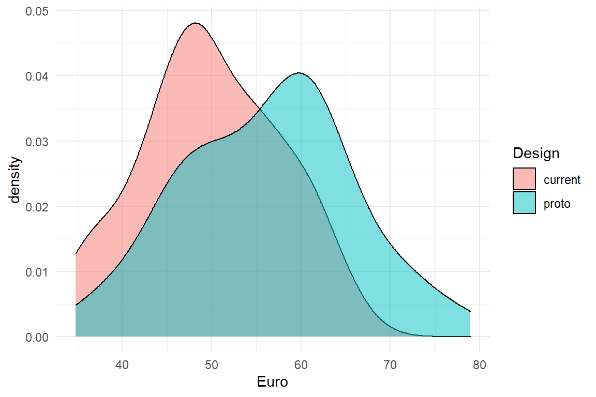
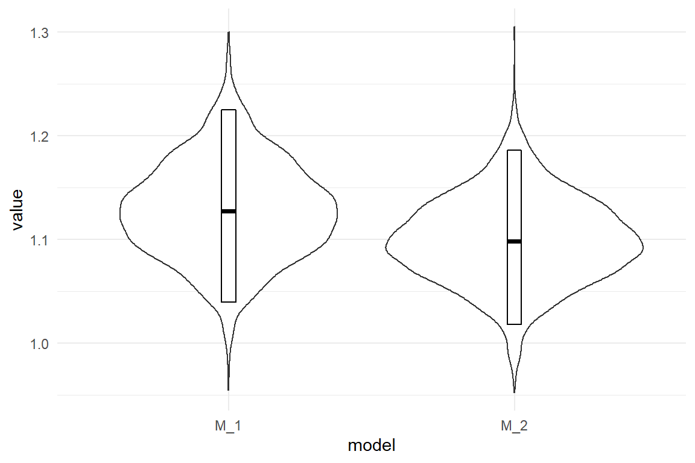
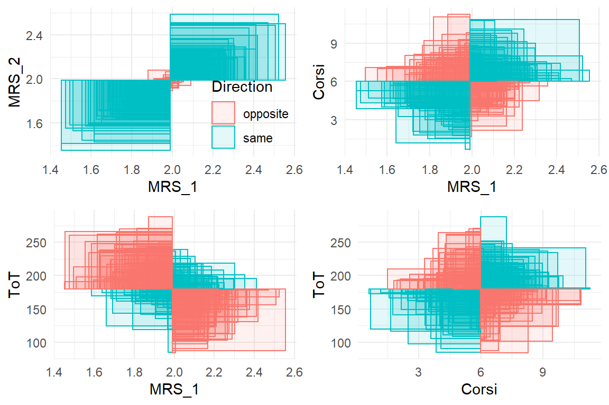
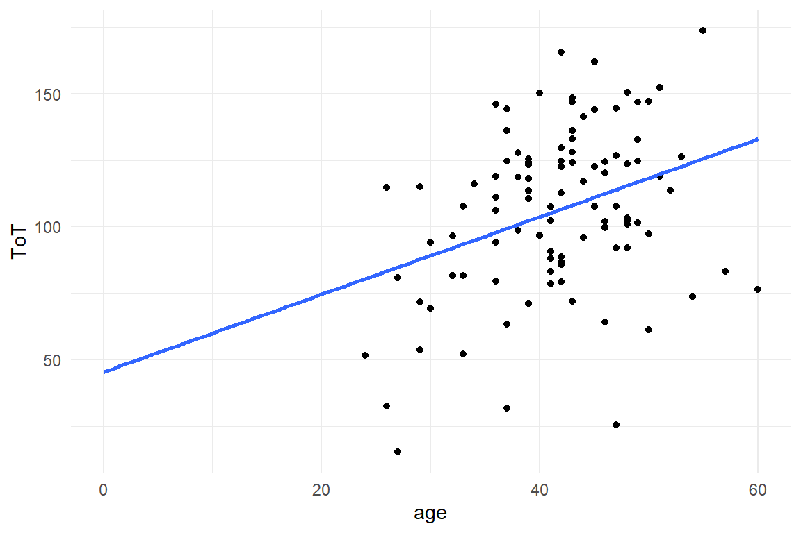
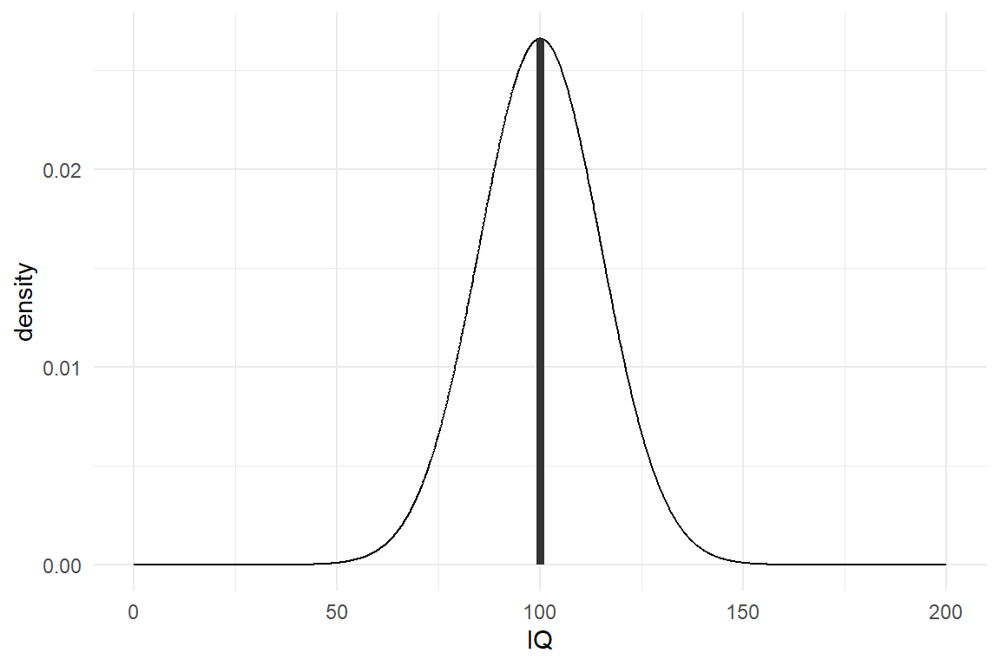
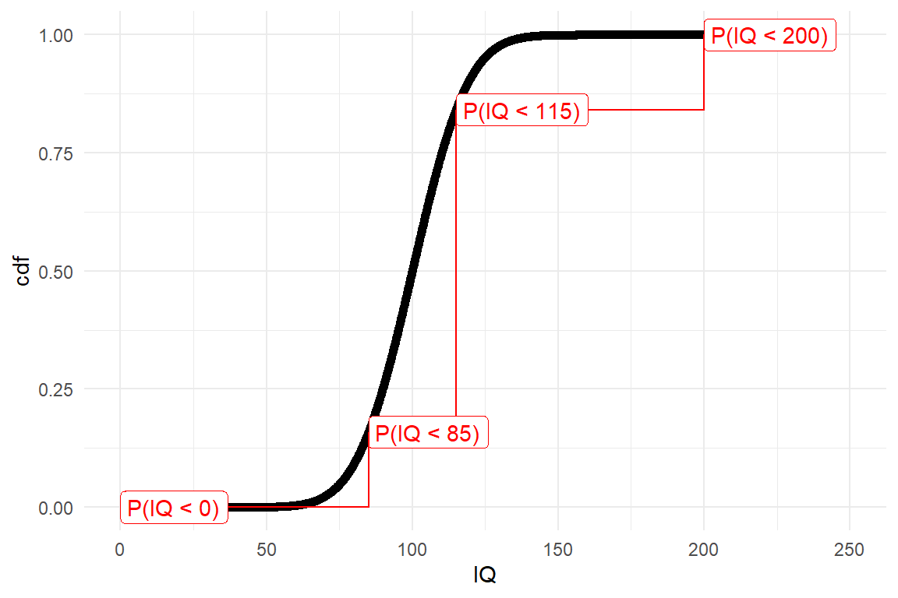
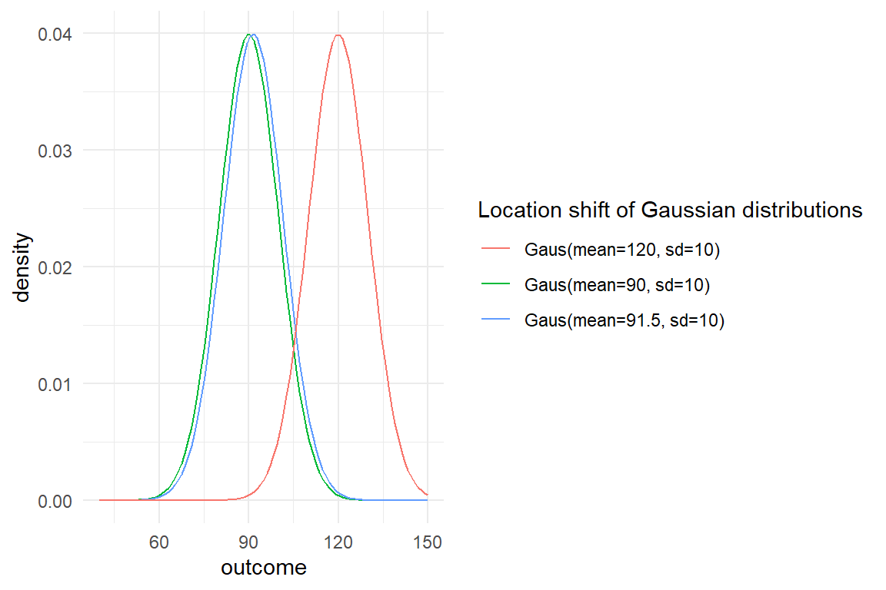
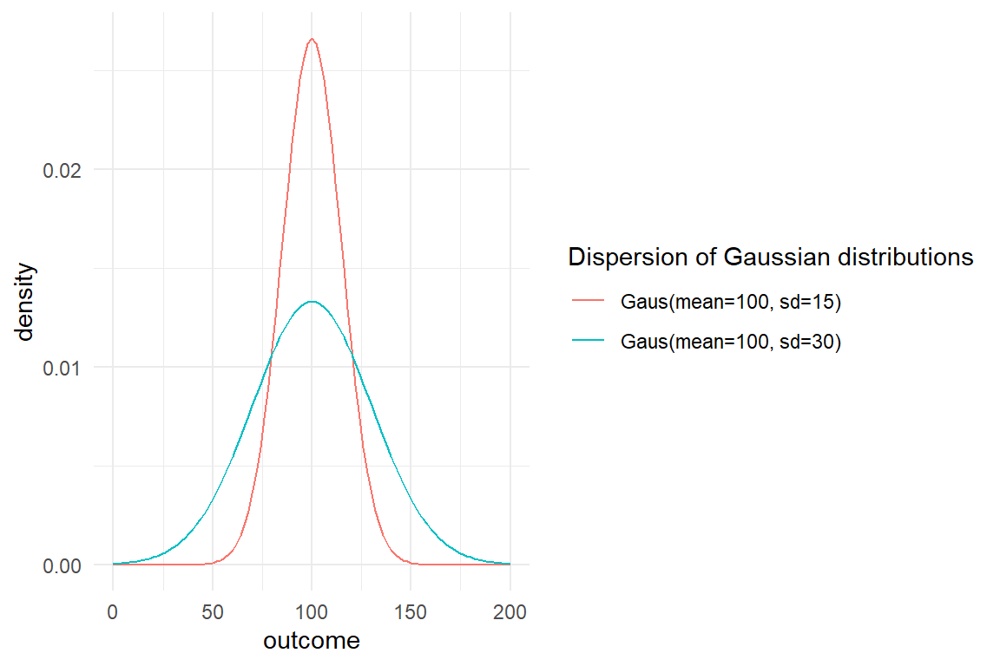
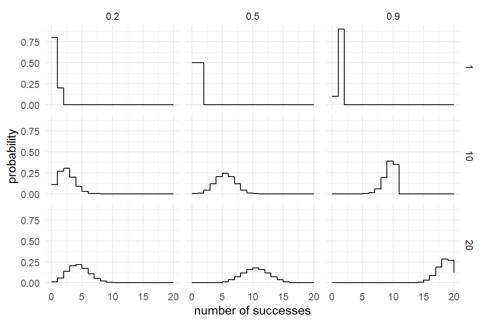
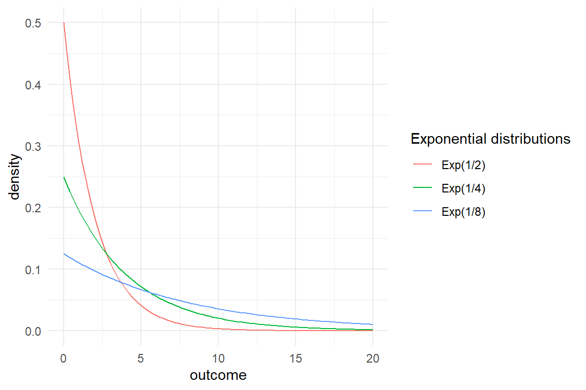

3 Elements of Bayesian statistics
As human beings we make our decisions on what has happened to us in the past. For example, we trust a person or a company more, when we can look back at a series of successful transactions. And we have remarkable capability to recall what has just happened, but also what happened yesterday or years ago. By integrating over all the evidence, we form a view of the world we forage. When evidence is abundant, we vigorously experience a feeling of certainty, or lack of doubt. That is not to deny, that in a variety of situations, the boundedness of the human mind kicks in and we become terrible decision makers. This is for a variety of psychological reasons, to name just a few:
- plain forgetting
- the primacy effect: recent events get more weight
- confirmation bias: evidence that supports a belief is actively sought for, counter-evidence gets ignored.
- the hindsight bias: once a situation has taken a certain outcome, we believe that it had to happen that way.
The very aim of scientific research is to avoid the pitfalls of our minds and act as rational as possible by translating our theory into a formal model of reality, gathering evidence in an unbiased way and weigh the evidence by formal procedures. This weighing of evidence using data essentially is statistical modeling and statistical models in this book all produces two sorts of numbers: magnitude of effects and level of certainty. In applied research, real world decisions depend on the evidence, which has two aspects: first, the strength of effects and the level of certainty we have reached.
Bayesian inferential statistics grounds on the idea of accumulating evidence, where past data is not lost. Certainty (or strength of belief or credibility or credence) in Bayesian statistics is formalized as a probability scale (0 = impossible, 1 = certain). The level of certainty is determined by two sources, everything that we already know about the subject and the data we just gathered. Both sources are only seemingly different, because when new data is analyzed, a transition occurs from what you new before, prior belief, to what you know after seeing the data, posterior belief. In other words: by data the current belief gets an update.
Updating our beliefs is essential for acting in rational ways. The first section of this chapter is intended to tell the Big Picture. It puts statistics into the context of decision-making in design research. For those readers with a background in statistics, this section may be a sufficient introduction all by itself.
In the remainder of this chapter the essential concepts of statistics and Bayesian analysis will be introduced from ground up. First we will look at descriptive statistics and I will introduce basic statistical tools, such as summary statistics and figures. Descriptive statistics can be used effectively to explore data and prepare the statistical modeling, but they lack one important ingredient: information about the level certainty.
3.4 first derives probability from set theory and relative frequencies, before we turn to the the famous Bayes theorem 3.4.5, followed by an introduction to Bayesian thinking 3.4.6.
Then we go on to basic concepts of statistical modeling, such as the likelihood and we finish with Bayes theorem, which does the calculation of the posterior certainty from prior knowledge and data. Despite the matter, I will make minimal use of mathematical formalism. Instead, I use R code as much as possible to illustrate the concepts. If you are not yet familiar with R, you may want to read chapter 2.2 first, or alongside.
Section 3.5 goes into the practical details of modeling. A statistical model is introduced by its two components: the structural part, which typically carries the research question or theory, followed by a rather deep account of the second component of statistical models: the random part.
3.1 Rational decision making in design research
- I see clouds. Should I take my umbrella?
- Should I do this bungee jump? How many people came to death by jumping? (More or less than alpine skiing?) And how much fun is it really?
- Overhauling our company website will cost us EUR 100.000. Is it worth it?
All the above cases are examples of decision making under uncertainty. The actors aim for maximizing their outcome, be it well being, fun or money. But, they are uncertain about what will really happen. And their uncertainty occurs on two levels:
- One cannot precisely foresee the exact outcome of one’s chosen action:
- Taking the umbrella with you can have two consequences: if it rains, you have the benefit of staying dry. If it does not rain, you have the inconvenience of carrying it with you.
- You don’t know if you will be the rare unlucky one, who’s bungee rope breaks.
- You don’t know by how much the new design will attract more visitors and how much the income will raise.
- It can be difficult to precisely determine the benefits or losses of potential outcomes:
- How much worse is your day when carrying a useless object with you? How much do you hate moisture? In order to compare the two, they must be assessed on the same scale.
- How much fun (or other sources of reward, like social acknowledgments) is it to jump a 120 meter canyon? And how much worth is your own life to you?
- What is the average revenue generated per visit? What is an increase of recurrence rate of, say, 50% worth?
Once you know the probabilities of all outcomes and the respective losses, decision theory provides an intuitive framework to estimate these values.
Expected utility \(U\) is the sum product of outcome probabilities \(P\) and the involved losses.
In the case of the umbrella, the decision is between two options: taking an umbrella versus taking no umbrella, when it is cloudy.
We calculate and compare the expected utilities U as follows (\(P(\text{outcome})\) is the probability of an outcome):
\[ \begin{aligned} &P(\text{rain}) &&&=& 0.6 \\ &P(\text{no rain}) &=& 1 - P(\text{rain}) &=& 0.4 \\ &L(\text{carry}) &&&=& 2 \\ &L(\text{wet}) &&&=& 4 \\ &U(\text{umbrella}) &=& P(\text{rain}) L(\text{carry}) + P(\text{no rain}) L(\text{carry}) = L(\text{carry}) &=& 2\\ &U(\text{no umbrella}) &=& P(\text{rain}) L(\text{wet}) &=& 2.4 \end{aligned} \]
| action |
|---|
| umbrella |
| no umbrella |
| outcome | prob |
|---|---|
| rain | 0.6 |
| no rain | 0.4 |
Losses <-
expand.grid(action = Actions$action,
outcome = Outcomes$outcome) %>%
join(Outcomes) %>%
mutate(loss = c(2, 4, 2, 0))
Losses| action | outcome | prob | loss |
|---|---|---|---|
| umbrella | rain | 0.6 | 2 |
| no umbrella | rain | 0.6 | 4 |
| umbrella | no rain | 0.4 | 2 |
| no umbrella | no rain | 0.4 | 0 |
Utility <-
Losses %>%
mutate(conditional_loss = prob * loss) %>%
group_by(action) %>%
summarise(expected_loss = sum(conditional_loss))
Utility| action | expected_loss |
|---|---|
| umbrella | 2.0 |
| no umbrella | 2.4 |
We conclude that, given the high chance for rain, and the conditional losses, the expected loss is larger for not taking an umbrella with you. It is rational to take an umbrella when it is cloudy.
3.1.1 Measuring uncertainty
As we have seen above, a decision requires two investigations: outcomes and their probabilities, and the assigned loss. Assigning loss to decisions is highly context dependent and often requires domain-specific expertise. The issues of probabilistic processes and the uncertainty that arises from them is basically what the idea of New Statistics represents. We encounter uncertainty in two forms: first, we usually have just a limited set of observations to draw inference from, this is uncertainty of parameter estimates. From just 20 days of observation, we cannot be absolutely certain about the true chance of rain. It can be 60%, but also 62% or 56%. Second, even if we precisely knew the chance of rain, it does not mean we could make a certain statement of the future weather conditions, which is predictive uncertainty. For a perfect forecast, we had to have a complete and exact figure of the physical properties of the atmosphere, and a fully valid model to predict future states from it. For all non-trivial systems (which excludes living organisms and weather), this is impossible.
Review the rainfall example: the strategy of taking an umbrella with you has proven to be superior under the very assumption of predictive uncertainty. As long as you are interested in long-term benefit (i.e. optimizing the average loss on a long series of days), this is the best strategy. This may sound obvious, but it is not. In many cases, where we make decisions under uncertainty, the decision is not part of a homogeneous series. If you are member of a startup team, you only have this one chance to make a fortune. There is not much opportunity to average out a single failure at future occasions. In contrast, the investor, who lends you the money for your endeavor, probably has a series. You and the investor are playing to very different rules. For the investor it is rational to optimize his strategy towards a minimum average loss. The entrepreneur is best advised to keep the maximum possible loss at a minimum.
As we have seen, predictive uncertainty is already embedded in the framework of rational decision making. Some concepts in statistics can be of help here: the uncertainty regarding future events can be quantified (for example, with posterior predictive distributions 4.1.3 and the process of model selection can assist in finding the model that provides the best predictive power.
Still, in our formalization of the Rainfall case, what magically appears are the estimates for the chance of rain. Having these estimates is crucial for finding an optimal decision, but they are created outside of the framework. Furthermore, we pretended to know the chance of rain exactly, which is unrealistic. Estimating parameters from observations is the reign of statistics. From naive calculations, statistical reasoning differs by also regarding uncertainty of estimates. Generally, we aim for making statements of the following form:
“With probability \(p\), the attribute \(A\) is of magnitude \(X\).”
In the umbrella example above, the magnitude of interest is the chance of rain. It was assumed to be 60%. This appears extremely high for an average day. A more realistic assumption would be that the probability of rainfall is 60% given the observation of a cloudy sky. How could we have come to the belief that with 60% chance, it will rain when the sky is cloudy? We have several options, here:
- Supposed, you know that, on average, it rains 60% of all days, it is a matter of common sense, that the probability of rain must be equal or larger than that, when it’s cloudy.
- You could go and ask a number of experts about the association of clouds and rain.
- You could do some systematic observations yourself.
Imagine, you have recorded the coincidences of clouds and rainfall over a period, of, let’s say, 20 days, with the following observations:
Intuitively, you would use the average to estimate the probability of rain under every condition.
These probabilities we can feed into the decision framework as outlined above. The problem is, that we obtained just a few observations to infer the magnitude of the parameter \(P(rain|cloudy) = 60\)%. Imagine, you would repeat the observation series on another 20 days. Due to random fluctuations, you would get a more or less different series and different estimates for the probability of rain. More generally, the true parameter is only imperfectly represented by any sample, it is not unlikely, that it is close to the estimate, but it could be somewhere else, for example, \(P(rain|cloudy) = 56.124\)%.
The trust you put in your estimation is called level of certainty or belief or confidence. It is the primary aim of statistics to rationally deal with uncertainty, which involves to measure the level of certainty associated with any statement derived from teh data. So, what would be a good way to determine certainty? Think for a moment. If you were asking an expert, how would you do that to learn about magnitude and uncertainty regarding \(P(rain|cloudy)\)?
Maybe, the conversation would be as follows:
YOU: What is the chance of rain, when it’s cloudy.
EXPERT: Wow, difficult question. I don’t have a definite answer.
YOU: Oh, c’mon. I just need a rough answer. Is it more like 50%-ish, or rather 70%-ish.
EXPERT: Hmm, maybe somewhere between 50 and 70%.
YOU: Then, I guess, taking an umbrella with me is the rational choice of action.
Note how the expert gave two endpoints for the parameter in question, to indicate the location and the level of uncertainty. If she had been more certain, she had said "between 55 and 65%. While this is better than nothing, it remains unclear, which level of uncertainty is enclosed. Is the expert 100%, 90% or just 50% sure the true chance is in the interval? Next time, you could ask as follows:
…
EXPERT: Hmm, maybe somewhere between 70-90%
YOU: What do you bet? I’m betting 5 EUR that the true parameter is outside the range you just gave.
EXPERT: I dare you! 95 EUR it’s inside!
The expert feels 95% certain, that the parameter in question is in the interval. However, for many questions of interest, we have no expert at hand (or we may not even trust them altogether). Then we proceed with option 3: making our own observations.
3.1.2 Benchmarking designs
The most basic decision in practical design research is whether a design fulfills an external criterion. External criteria for human performace in a human-machine system are most common, albeit not abundant, in safety-critical domains.
Consider Jane: she is user experience researcher at the mega-large rent-a-car company smartr.car. Jane was responsible for a overhaul of the customer interface for mobile users. Goal of the redesign was to streamline the user interface, which had grown wild over the years. Early customer studies indicated that the app needed a serious visual de-cluttering and stronger funneling of tasks. 300 person months went into the re-development and the team did well: a recent A/B study had shown that users learned the smartr.car v2.0 fast and could use its functionality very efficiently. Jane’s team is prepared for the roll-out, when Marketing comes up with the following request:
Marketing: We want to support market introduction with the following slogan: “rent a car in 99 seconds”.
Jane: Not all users manage a full transaction in that short time. That could be a lie.
Marketing: Legally, the claim is fine if it holds on average.
Jane: That I can find out for you.
Jane takes another look at the performance of users in the smartr car v2.0 condition. As she understands it, she has to find out whether the average of all recorded time-on-tasks with smartr.car 2.0 is 99 seconds, or better. Here is how the data looks like:

The performance is not completely off the 99 seconds, many users are even faster. Jane figures out that she has to ask a more precise question, first, as teh slogan can mean different things, like:
- all users can do it within 99 seconds
- at least one user can do it
- half of the users can do it
Jane decides to go the middle way and chooses the population average, hence the average ToT must not be more than 99 seconds. Unfortunately, she had only tested a small minority of users and therefore cannot be certain about the true average:
## [1] 106Because the sample average is an uncertain, Jane is afraid, Marketing could use this as an argument to ignore the data and go with the claim. Jane sees no better way as quantifying the chance of being wrong using a statistical model, which will later become known as the Grand Mean Model)
| model | parameter | type | fixef | center | lower | upper |
|---|---|---|---|---|---|---|
| M_1 | Intercept | fixef | Intercept | 106 | 99.8 | 112 |
Let’s see what the GMM reports about the population average and its uncertainty: The table above is called a CLU table, because it reports three estimates per coefficient:
- Center, which (approximately) is the most likely position of the true value
- Lower, which is the lower 95% credibility limit. There is a 2.5% chance that the true value is lower
- Upper, the 95% upper limit. The true value is larger than this with a chance of 2.5%.
This tell Jane that most likely the average time-on-task is \(Intercept\). That is not very promising, and it is worse: 99 is even below the lower 95% credibility limit. So, Jane can send a strong message: The probability that this claim is justified, is smaller than 2.5%.
Luckily, Jane had the idea that the slogan could be changed to “rent a card in 1-1-1 seconds”. The 95% credibility limits are in her favor, since 111 is at the upper end of the credibility limit. It would be allowed to say that the probability to err is not much smaller than 2.5%. But Jane desires to make an accurate statement. But what precisely is the chance that the true population average is 111 or lower? In Bayesian analysis there is a solution to that. When estimating such a model, we get the complete distribution of certainty, called the posterior distribution. In fact, a CLU table with 95% credibility limits is just a summary on the posterior distribution. This distribution is not given as a function, but has been generated by a (finite) random walk algorith, known as Markov-Chain Monte Carlo. At every step (or most, to be precise), this algorithm jumps to another set of coordinates in parameter space and a frequency distribution arises that can be used to approximate levels of certainty. The following illustration shows the posterior frequency distribution of the coefficient, divided into the two possible outcomes.
P_1 %>%
filter(parameter == "Intercept") %>%
mutate(outcome = ifelse(value <= 111,
"111 seconds or shorter",
"longer than 111 seconds")) %>%
ggplot(aes(x = value, fill = outcome)) +
geom_histogram(binwidth = 2)
In the present case, we can derive the chance that the true average of the customer population is lower than the target of 111:
In a similar manner to how the graph above was produced, a precise certainty level can be estimated from the MCMC frequency distribution contained in the posterior object. The certainty that the 111 seconds slogan holds is much better:
| certainty |
|---|
| 0.935 |
The story of Jane is about decision making under risk and under uncertainty. We have seen how easily precise statements on uncertainty can be derived from a statistical model. But regarding rational decision making, this is not an ideal story: What is missing is a systematic analysis of losses (and wins). The benefit of going with the slogan has never been quantified. How many new customers it will really attract and how much they will spend cannot really be known upfront. Let alone, predicting the chance to loose in court and what this costs are almost unintelligeable. The question must be allowed, what good is the formula for utility, when it is practically impossible to determine the losses. And if we cannot estimate utilities, what are the certainties good for?
Sometimes, one possible outcome is just so bad, that the only thing that practically matters, is to avoid it at any costs. Loosing a legal battle often falls into this category and the strategy of Marketing/Jane effectively reduced this risk: they dismissed a risky action, the 99 seconds statement, and replaced it with a slogan that they can prove is true with good certainty.
In general, we can be sure that there is at least some implicit calculation of utilities going on in the minds of Marketing. Perhaps, that is a truly intuitive process, which is felt as an emotional struggle between the fear of telling the untruth and love for the slogan. This utility analysis probably is inaccurate, but that does not mean it is completely misleading. A rough guess always beats complete ignorance, especially when you know about the attached uncertainty. Decision-makers tend to be pre-judiced, but even then probabilities can help find out to what extent this is the case: Just tell the probabilities and see who listens.
3.1.3 Comparison of designs
The design of systems can be conceived as a choice between design options. For example, when designing an informational website, you have the choice of making the navigation structure flat or deep. Your choice will change usability of the website, hence your customer satisfaction, rate of recurrence, revenue etc. Much practical design research aims at making good choices and from a statistical perspective that means to compare the outcomes of two (or more) design option. A typical situation is to compare a redesign with its predecessor, which will now be illustrated by a hypothetical case:
Violet is a manager of an e-commerce website and at present, a major overhaul of the website is under debate. The management team agrees that this overhaul is about time and will most likely increase the revenue per existing customer. Still, there are considerable development costs involved and the question arises whether the update will pay itself in a reasonable time frame. To answer this question, it is not enough to know that revenues increase, but an more accurate prediction of how much precisely is gained. In order to return the investment, the increase must be in the ballpark of 10% increase in revenue. For this purpose, Violet carries out a user study to compare the two designs. Essentially, she observes the transactions of 50 random customers using the current system with 50 transactions with a prototype of the new design. The measured variable is the money every user spends during the visit. The research question is: By how much do revenues increase in the prototype condition?. The figure below shows the distribution of measured revenue in the experiment.

There seems to be a slight benefit for the prototype condition. But, is it a 10% increase? The following calculation shows Violet that it could be the case:
| Design | mean_revenue |
|---|---|
| current | 49.9 |
| proto | 56.3 |
Like in the previous case, testing only a sample of 100 users out of the whole population leaves room for uncertainty. So, how certain can Violet be? A statistical model can give a more complete answer, covering the magnitude of the improvement, as well as a level of certainty. Violet estimates a model that compares the means of the two conditions 4.3.1, assuming that the randomness in follows a Gamma distribution 6.3.1.
library(rstanarm)
library(tidyverse)
library(bayr)
M_1 <-
RD %>%
stan_glm(Euro ~ Design,
family = Gamma(link="log"),
data = .)
P_1 <- posterior(M_1)The coefficients of the Gamma model are on a logarithmic scale, but when exponentiated, they can directly be interpreted as multiplications 6.2.1.1. That precisely matches the research question, which is stated as percentage increase, rather than a difference.
| parameter | fixef | center | lower | upper |
|---|---|---|---|---|
| Intercept | Intercept | 49.90 | 46.99 | 53.05 |
| Designproto | Designproto | 1.13 | 1.04 | 1.23 |
The results tell Violet that, most likely, the average user spends 49.904 Euro with the current design. The prototype seems to increase the revenue per transaction by a factor of \(1.127\). That would be a sufficient increase, however this estimate comes from a small sample of users and there remains a considerable risk, that the true improvement factor is much weaker (or stronger). The above coefficient table tells that with a certainty of 95% the true value lies between \(1.039\) and \(1.225\). But, what precisely is the risk of the true value being lower than 1.1? This information can be extracted from the model (or the posterior distribution):
N_risk_of_failure <-
P_1 %>%
filter(parameter == "Designproto") %>%
summarize(risk_of_failure = mean(exp(value) < 1.1))
N_risk_of_failure| risk_of_failure |
|---|
| 0.284 |
The risk of failure is just below 30%. With this information in mind Violet now has several options:
- deciding that 28.425% is a risk she dares to take and recommend going forward with the development
- continue testing more users to reach a higher level of certainty
- improve the model by taking into account sources of evidence from the past, i.e. prior knowledge
3.1.4 Prior knowledge
It is rarely the case that we encounter a situation as a blank slate. Whether we are correct or not, when we look at the sky in the morning, we have some expectations on how likely there will be rain. We also take into account the season and the region and even the very planet is sometimes taken into account: the Pathfinder probe carried a bag of high-tech gadgets to planet Mars. However, the included umbrella was for safe landing only, not to cover from precipitation, as Mars is a dry planet.
In most behavioral research it still is the standard that every experiment had to be judged on the produced data alone. For the sake of objectivity, researchers were not allowed to take into account previous results, let alone their personal opinion. In Bayesian statistics, you have the choice. You can make use of external knowledge, but you don’t have to.
Violet, the rational design researcher has been designing and testing e-commerce systems for many years and has supervised several large scale roll-outs. So the current project is not a new situation, at all. From the top of her head, Violet produces the following table to capture her past twenty projects and the increase in revenue that had been recorded afterwards.
| project | revenue_increase |
|---|---|
| 19 | 1.041 |
| 9 | 1.072 |
| 8 | 1.003 |
| 13 | 0.998 |
| 17 | 1.037 |
| 6 | 1.014 |
| 14 | 0.979 |
| 2 | 1.016 |
On this data set, Violet estimates another grand mean model that essentially captures prior knowledge about revenue increases after redesign:
M_prior <-
D_prior %>%
stan_glm(revenue_increase ~ 1,
family = Gamma(link = "log"),
data = .,
iter = 5000)
P_prior <- posterior(M_prior)Note that the above model is a so called Generalized Linear Model with a Gamma shape of randomness, which will be explained more deeply in chapter 6.3.
The following CLU table shows the results. The mean increase was Intercept and without any further information, this is the best guess for revenue increase in any future projects (of Violet). A statistical model that is based on such a small number of observations usually produces very uncertain estimates, which is why the 95% credibility limits are wide. There even remains a considerable risk that a project results in a decrease of revenue, although that has never been recorded. (In Gamma models coefficients are usually multiplicative, so a coefficient \(<1\) is a decline).
| model | parameter | type | fixef | center | lower | upper |
|---|---|---|---|---|---|---|
| M_prior | Intercept | fixef | Intercept | 1.02 | 0.882 | 1.18 |
Or graphically, we can depict the belief as follows:
P_prior %>%
filter(parameter == "Intercept") %>%
mutate(value = exp(value)) %>%
ggplot(aes(x = value)) +
geom_density(fill = "grey") +
xlab("Strength of belief")
The population average (of projects) is less favorable than what Violet saw in her present experiment. If the estimated revenue on the experimental data is correct, it would be a rather extreme outcome. And that is a potential problem, because extreme outcomes are rare. Possibly, the present results are overly optimistic (which can happen by chance) and do not represent the true change revenue, i.e. on the whole population of users. In Bayesian Statistics, mixing present results with prior knowledge is a standard procedure to correct this problem. In the following step, she uses the (posterior) certainty from M_prior and employs it as prior information (by means of a Gaussian distribution). Model M_2 has the same formula as M_1 before, but combines the information of both sources, data and prior certainty.
T_prior <-
P_prior %>%
filter(parameter == "Intercept") %>%
summarize(mean = mean(value), sd = sd(value))
M_2 <-
stan_glm(formula = Euro ~ Design,
prior_intercept = normal(0, 100),
prior = normal(T_prior[[1,1]], T_prior[[1,2]]),
family = Gamma(link = "log"),
data = RD)
P_2 <- posterior(M_2)Note that the standard deviation here is saying how the strength of belief is distributed for the average revenue. It is not the standard deviation in the a population of projects.
| model | parameter | center | lower | upper |
|---|---|---|---|---|
| M_1 | Designproto | 1.13 | 1.04 | 1.23 |
| M_2 | Designproto | 1.10 | 1.02 | 1.19 |
P_comb %>%
ggplot(aes(x = model, y = value)) +
geom_violin() +
geom_crossbar(data = coef(P_comb),
aes(y = center, ymin = lower, ymax = upper),
width = .05)
Model M_2 reduces the estimated expected revenue by a small amount. But, remember that Violet has to meet the criterion of 110% in revenue. In the following she extracts the risk of failure (revenue smaller than 110%) from the posterior distribution.
P_comb %>%
mutate(outcome = value < 1.1) %>%
group_by(model) %>%
summarize(risk_to_fail = mean(outcome))| model | risk_to_fail |
|---|---|
| M_1 | 0.284 |
| M_2 | 0.512 |
So what should Violet report to decision makers? Something like this: "The data from the study us that our chance of success is around two-thirds. However, in my long career I have never actually reached such an increase in revenue, so I’d rather say, chance of success is more around 50%.
3.2 Observations and measures
The statistical models presented in this book have in common, that there is exactly one measure, which we call the outcome. In design research, outcome variables directly represent the current value of a design, or an aspect of it. This section provides an overview on the types of outcome variables.
3.2.1 Interaction sequences
A general concept in design is to think of purposes as user tasks. A user task can be defined as an initial state, a desired outcome and a procedure to get there. The knowledge required to follow the procedure can be found in two major locations: the users mind (mental model) and the interface (design model). A principle of user-centered design is to create a design model that matches the users current representation of the task, or easily enters the users mind, at least. The first is called intuitiveness of a design, the latter ease-of-learning.
A highly intuitive design matches the users mental model, and can be used out-of-the-box, without the requirement to instruct or train a user. Intuitiveness relies on the match between design and mental model. Whereas the design model is explicit, the mental model needs to be elicited from the users mind. Eliciting procedural mental models is difficult. You may think it is sufficient to just ask users about the idea of a procedure, but that is a limited approach. If I ask you about the precise steps in preparing a cup of coffee in your kitchen, that probably is a more demanding and error-prone than to ask you to prepare an actual cup of coffee. Two reasons make up for this discrepancy:
- The human mind has separate facilities for procedural knowledge and declarative knowledge. If I ask you about a procedure, you first have to make a translation.
- The more automated a task is, the less available it is to your conscious mind.
Our ability to verbalize our actions are limited. If there were no such verbalization limit, designing for tasks would be simple: just ask! Only mind-reading is more convenient. In user-centered design verbal inquiries are a central method. But, results from user interviews can be incomplete or biased.
An example for incompleteness is that users sometimes fail to report what they think is obvious. For example, in modern computer desktop applications a function to undo a step is standard and probably it is one of the most frequently used functions. In other types of systems, for example data-base driven information systems, implementing an Undo function is non-trivial, because data base records can be changed by multiple users. It can be implemented by so-called roll-back mechanisms, but these reduce performance and storage capacity of the system. When collecting user requirements for such a system, the developer has little interest in Undo, whereas the user has a huge interest, but does not mention it. If that is not resolved during the design process, there will be trouble.
Verbal reports of action sequences are often incomplete. But, if there is something even worse, then it is the limited ability of humans to imagine new situations, or novel ways of doing something. Imagine you had a time machine and you would travel back to the year 1981, which is a year before the series Knight Rider went on broadcast. If you would ask car drivers from that era, how they would envision a navigation assistant device, you would probably end up with something that looks more like a Star Trek computer console than with anything comparable to modern navigation device.
This why one central principle of user-centered design is the direct observation of users. By directly observing how a person prepares a cup of coffee, we can learn about the details of behavior and close the verbalization gap. By observing many action sequences, we can carve out detailed user requirements, or fix an existing design. Observing user interactions does not require one-way mirrors and nights of video coding. Because of the verbalization gap, a lot can be learned just by watching over the users shoulder. The method of think-aloud usability testing even goes one step further and combines behavior observation with verbalization.
Interaction sequences can sometimes be collected without a human observer. Log files of web servers provide sequences of users navigating web site. Plugin software is available that records keystrokes and mouse actions on computers. The difficult part is the following: When observing 50 users while doing a non-trivial task, no two interaction sequences are exactly the same (if i had to bet on it). By itself, there is little value without further means of interpretation and this can go two ways up: qualitative and quantitative.
The qualitative design researcher will collect interaction sequences, as well as verbal reports and shuffle them around until an intelligible picture emerges. One way to describe the purpose of user testing is to find out all possible ways how things can go wrong. Every break-down that is observed at least once in a sample of test users, tells a story of what may happen to hundreds or thousands of users in the future. That is why in early development phases, qualitative research rules.
The quantitative researcher will aim at deriving measures from the interaction sequence. Formally, to measure means assigning numbers to observed sequences, so that these can be brought into an order, at least. If the original data is qualitative, we need some method of transformation that gives us measures.
Sometimes, you have to go a long way up the qualitative route, before you can derive useful measures. In (Schnittker et al. 2016) we coded sequences from nurses using an infusion pump. Individual sequences were compared to a optimal reference path. The closer a user stays on this path, the better. But how to measure similarity? We used the Levensthein distance, which takes two sequences, the optimal patzh and the observed path and determines the minimum number of edits to transform one sequence into the other. This results in a score for error proneness, the deviation from optimal path.
Another example is a study we did on the active user paradox. We recorded interaction sequences of users doing editing tasks with a graphics software. The sessions were recorded and analysed using a behavioural coding scheme. First, events were classified on a low level (e.g. “reading the handbook”, “first time trying a function”) and later aggregated to broader classes (e.g. “exploratory behavior”). The number of exploratory events then served as a measure for the exploratory tendencies of the participant.
3.2.2 Performance measures
User errors are qualitative by nature and need a transformation to be used as outcome variables. Other aspects of performance can be measured directly. A useful framework for outcome measures is the classic concept of usability, which the ISO 9142-11 defines by the following three high-level criteria:
- effectiveness: can users accomplish their tasks?
- efficiency: what resources have to be spend for a task, e.g. time.
- satisfaction: how did the user like it?
While these criteria originated in the field of Human-Computer Interaction, they can easily be adapted to compare everything that people do their work with. Even within the field, it has been adapted to hundreds of studies and a hundred ways are reported of assessing these criteria.
Effectiveness is often measured by completion rate (CR). A classic waterfall approach would be to consult the user requirements documents and identify the, let’s say eight, crucial tasks the system must support. User test might then show that most users fail at the two tasks, and a completion rate of 75% is recorded for the system. Completion rate is only a valid effectiveness measure with distinct tasks. Strictly, the set of tasks also had to be complete, covering the whole system. When completion rate is taken from in series of repetitive tasks, it depends on whether it is effectiveness or efficiency. It is effectiveness, when a failed operation is unrepairable, such as a traffic accident, data loss on a computer or medical errors. But, who cares for a single number between 0 and 1, when the user test provides such a wealth of information on why users failed? Effectiveness, in the sense of task completion, is primarily a qualitative issue and we shall rarely encounter it in this book.
A more subtle notion of effectiveness is the quality of outcome, and despite the very term, it is a measure. (Perhaps, it should better be called level of perfection.) Reconsider the AUP study, where participants had to modify a given graphic, e.g. change some colors and erase parts of it. Of course, some participants worked neatly, whereas others used broader strokes (literally). There are several ways to rank all results by quality and thereby create an outcome variable.
Efficiency is where it really gets quantitative as we ask about resources: time, attention, strain, distraction and Euros. Efficiency can be measured in a variety of ways: time-on-task (ToT), clicks, mental workload or time spent watching the traffic while driving.
Counting the number of clicks before someone has found the desired piece of information is a coarse, but easy to acquire and intuitive measure of efficiency, and so is time-on-task (ToT).
ToT and other performance measures can be very noisy. The general recipe to reduce noise and improve certainty is to collect more data. The obvious way of doing this is by increasing the sample size, but that can be costly. A more efficient way to reduce uncertainty with a given sample is to collect more data per participant, which is called repeated measures. Chapter 5 will introduce models that deal with repeated measures in a straight-forward way.
Counting steps-to-completion or errors often requires the laborous process of interaction analysis. Measures of duration are much easier to obtain and in many situations they are spot-on: In usability studies, time-on-task is a direct measure of efficiency. When controlling a car in dense city traffic, a few hundred milliseconds is what makes huge a difference and therefore reaction time is a valid performance measure. In experimental cognitive research reaction times have been succesfully used in countless experiments to reveal the structure of the mind.
3.2.3 Satisfaction and other feelings
The standard definition of usability defines three levels of usability, the two performance-related effectiveness and efficiency, and satisfaction. The latter has long been held the enfant terrible of the three. That’s not a big surprise, as satisfaction is about the feelings of users.
Early research in the 1990s took enough with a few rating scales, that measure satisfaction, as the absence of negative feelings. Later, when User Experience era took off, a wave of constructs and measures washed over the research community, here are just a few examples:
- beauty
- hedonic quality
- coolness
- credibility
- meaning of life
Feelings are a tricky business when it comes to measuring them. Most frequently, rating scales are employed, and often the same author makes the remark, that the study should be replicated with more objective measures for emotional states, such as physiological measures or implicit measures. However, I haven’t seen many studies where such measures produced good results.
Despite all criticism, self-report rating scales are still the primary method of measuring feelings towards designs. Rating scale instruments exist for a variety of concepts, but they come in only a few forms: first, there exist single item or multi-item scales. Single-item instruments are the hydrogen of rating scales. Because they are so short, they cause little interruption and are therefore useful for obtaining repeated measures over time. That is very valuable, when the goal is to track feelings of an extended period of time. For example, the effect of learning can be seen in a decline of cognitive workload over time. From a methodological point-of-view, single-item scales are inferior, because many quality checks rest on having multiple items (see 5.8).
Multi-item rating scales are the standard. Participants or users respond to a number of statements, that have an overarching theme. In contrast to single items, multi-item scales are amenable to a number of procedures for quality check, such as reliability. Whereas a psychometric assessment requires the data on item level, for the purpose of design eveluation multi-item ratings are often aggregated total scores, such as the average score. However, aggregation always causes a loss in information and with the multi-level models presented in 5.8, this is also no longer required.
Next to the number of items, rating scale instruments differ in cardinality of the response, which is the number of possible responses to an item. By far most rating scales use between four and nine ordered bins. In contrast, so called visual analog rating scales measure on a continuum. This can be done on paper, using a ruler to translate the response into numbers, or using a slider bar in a computer program.
Finally, rating scales have either unipolar or bipolar anchoring. Many rating scales put labels (instead of just numbers) on minimum and the maximum bins. With a unipolar item, the left anchor is neutral, whereas the right is not, like in:
0: Dull … 1: Bliss
Dull is not the opposite of bliss, it is the absence of it. (Just like Zero is not the opposite of One.) one example of a bipolar scales is:
-1: Ugly … + 1: Beautiful
Another consideration with binned (rather than continuous) bipolar scales. If such a scale has an uneven number, the center bin is neutral.
-1:Ugly … 0:Neutral … +1:Beautifuly
Sometimes, it is useful that participants have the opportunity for a neutral answer, for example, when the participant may just not know:
The help pages of the program are written in a clear language.
-1: Not at all … 0: I didn’t notice +1: … Totally
Especially with long questionnaires, it can happen that participants are getting bored an just always respond neutral. In such a case, an even number of bins, i.e. the absence of a neutral response, forces participants to make a choice of direction, at least.
What kind of rating scale you use has consequences for your statistical model. As we will see in section 5.8, multi-level models are a good match for multi-item rating scales. What also matters for the choice of model is whether you have been using a visual analog scale or a binned scale. Data from visual analog scales is more easily treated, by either a Gaussian 5.8 or a Beta linearized model 6.4.2. Both are relatively lean methods and easy to report. For binned rating scales the complicated beast called ordinal logistic regression 6.4.1 applies. My advice would be to use visual analog scales, whenever possible, even if this means to not exactly following the original instructions for the scale.
While rating scales are prevalent for measuring feelings, that does not mean there are no other, more objective, ways. There has been some buzz about physiological measures, like galvanic skin response or EEG, lately. In our own lab, I have seen these measures fail more often than succeed for the evaluation of products (such as wine or floor cleaning robots).
Implicit measures are means to assess certain attitudes or feelings by means of experimental setups. For example, We once tried to measure technophile attitude (geekism) using a variant of the classic Stroop task. In (Schmettow, Noordzij, and Mundt 2013) we showed pictures of computers to a samnple of students, followed by the Stroop task, which means that participants had to name the ink color of a color-printed word (e.g., “explore” in color Red). It was conceived that reaction time increases when a participant experiences a strong association, like how good it felt to build a computer all by yourself. The initial success was soon washed away by a failure to reproduce these results. Another implicit method sometimes proposed is the Approach-Avoidance task, which has gotten some merits in research on addiction and racism. In simple terms, participants (or users) are asked to push or pull a joystick and it seems that they pull faster, when they see something they like (a bottle of booze) and push faster when they dislike what they see (a photograph of war victims). However, I have seen this approach failing to produce relevant results in a design comparison experiment. Generally, such experiments produce reaction time differences below the 100ms mark and therefore many trials are needed to carve out any differences. At the same time, I have doubts that the emotional reactions towards, say computer interfaces, play in the same league as the stimuli used in research on addiction or racism research. Emotional responses in design research may just be too mellow to disturb cognitive processes with a strength that is measurable.
3.3 Descriptive statistics
In empirical research we systematically gather observations. Observations of the same kind are usually subsumed as variables. A set of variables that have been gathered on the same sample are called a data set, which typically is a table with variables in columns. In the most general meaning, a statistic is a single number that somehow represents relevant features of a data set, such as:
- frequency: how many measures of a certain kind can be found in the data set?
- mean: do measures tend to be located left (weak) or right (strong) on a scale?
- variance: are measures close together or widely distributed along the scale?
- association: does one variable X tend to change when another variable Y changes?
3.3.1 Frequencies
The most basic statistics of all probably is the number of observations on a variable \(x\), usually denoted by \(n_{x}\). The number of observations is a rough indicator for the amount of data that has been gathered. In turn, more data usually results in better accuracy of statistics and higher levels of certainty can be reached.
## [1] 100The number of observations is not as trivial as it may appear at first. In particular, it is usually not the same as the sample size, for two reasons: First, most studies employ repeated measures to some extent. You may have invited \(N_\textrm{Part} = 20\) participants to your lab, but each participant is tested on, let’s say, \(N_\textrm{Task} = 5\) tasks, the number of observations is \(N_\textrm{Obs} = N_\textrm{Part}N_\textrm{Task} = 100\). Second, taking a valid measure can always fail for a variety of reasons, resulting in missing values (NA). For example, in the 99 seconds study, it has happened, that a few participants missed to fill in their age on the intake form. The researcher is left with fewer measures of age \(n_{age}\) than there were participants.
## [1] 100Another important issue is the distribution of observations across groups. Again, the number of observations in a group is linked to the certainty we can gain on statistics of that group. Furthermore, it is sometimes important to have the distribution match the proportions in the population, as otherwise biases may occur.
| Gender | n() |
|---|---|
| female | 59 |
| male | 41 |
The table above shows so called absolute frequencies. Often, we have to compare frequencies of two groups of different size, it often is more appropriate to report relative frequencies or proportions:
| Gender | rel_freq |
|---|---|
| female | 0.59 |
| male | 0.41 |
Summarizing frequencies of metric measures, such as time-on-task (ToT) or number of errors is useful, too. However, a complication arises by the fact that continuous measures do not naturally fall into groups. Especially in duration measures no two measures are exactly the same.
## [1] 2## [1] 100The answer to this problem is binning: the scale of measurement is divided into a number of adjacent sections, called bins, and all measures that fall into one bin are counted. For example, we could use bins of 10 seconds and assess whether the bin with values larger than 90 and smaller or equal to 100 is representative in that it contains a large proportion of values. If we put such a binned summary of frequencies into a graph, that is called a histogram.
bin <- function(x, bin_width = 10) floor(x/bin_width) * bin_width
n_ToT <- N_obs(Ver20$ToT)
Ver20 %>%
mutate(bin = bin(ToT)) %>%
group_by(bin) %>%
summarize(rel_freq = n()/n_ToT) %>%
ggplot(aes(x = bin, y = rel_freq)) +
geom_col()
Strictly spoken, grouped and binned frequencies are not one statistic, but a vector of statistics. It approximates what we will later get to know more closely as a distribution 3.5.2.
3.3.2 Central tendency
Reconsider the rational design researcher Jane A.2.2. When asked about whether users can complete a transaction within 99, she looked at the population average of her measures. The population average is what we call the (arithmetic) mean. The mean is computed by summing over all measures and divide by the number of observations. The mean is probably the most often used measure of central tendency, but two more are being used and have their own advantages: median and mode.
## [1] 106Note that I am using function N_obs() @pref(frequencies), not length(), to not accidentally count missing values (NA).
Imagine a competitor of the car rental company goes to court to fight the 99-seconds claim. Not an expert in juridical matters, my suggestion is that one of the first questions to be regarded in court probably is: what does “rent a car in 99 seconds” actually promise? One way would be the mean (“on average users can rent a car in 99 seconds”), but here are some other ways to interpret the same slogan:
“50% (or more) of users can …”. This is called the median. The median is computed by ordering all measures and identify the the element right in the center. If the number of observations is even, there is no one center value, and the mean of the center pair is used, instead.
my_median <- function(x){
n <- length(x)
center <- (n + 1)%/%2
if (n%%2 == 1)
sort(x, partial = center)[center]
else mean(sort(x, partial = center + 0:1)[center + 0:1])
}
my_median(Ver20$ToT)Actually, the median is a special case of so called quantiles. Generally, an quantiles are based on the order of measures and an X% quantile is that value where X% of measures are equal to or smaller. The court could decide that 50% of users is too lenient as a criterion and could demand that 75% percent of users must complete the task within 99 seconds for the slogan to be considered valid.
## 50% 75%
## 108 125A common pattern to be found in distributions of measures is that a majority of observations are clumped in the center region. The point of highest density of a distribution is called the mode. In other words: the mode is the region (or point) that is most likely to occur. For continuous measures this once again poses the problem that every value is unique. Sophisticated procedures exist to smooth over this inconvenience, but by the simple method of binning we can construct an approximation of the mode: just choose the center of the bin with highest frequency. This is just a crude approximation. Advanced algorithms for estimating modes can be found in the R package Modeest.
mode <- function(x, bin_width = 10) {
bins <- bin(x, bin_width)
bins[which.max(tabulate(match(x, bins)))] + bin_width/2
}## [1] 145Ver20 %>%
group_by() %>%
summarize(
mean_ToT = mean(ToT),
median_ToT = median(ToT),
mode_ToT = mode(ToT))| mean_ToT | median_ToT | mode_ToT |
|---|---|---|
| 106 | 108 | 145 |
The table above shows the three statistics for central tendency side-by-side. Mean and median are close together. This is frequently the case, but not always. Only if a distribution of measures is completely symmetric, mean and median perfectly coincide. In section 3.5.2 we will encounter distributions that are not symmetric. The more a distribution is skewed, the stronger the difference between mean and median increases.

To be more precise: for left skewed distributions the mean is strongly influenced by few, but extreme, values in the left tail of the distribution. The median only counts the number of observations to both sides and is not influenced by how extreme these values are. Therefore, it is located more to the right. The mode does not regard any values other than those in the densest region and just marks that peak. The same principles hold in reversed order for right-skewed distributions.
To summarize, the mean is the most frequently used measure of central tendency, one reason being that it is a so called sufficient statistic, meaning that it exploits the full information present in the data. The median is frequently used when extreme measures are a concern. The mode is the point in the distribution that is most typical.
3.3.3 Dispersion
In a symmetric distribution with exactly one peak, mean and mode coincide and the mean represents the most typical value. But, a value being more typical does not mean it is very typical. That depends on how the measures are dispersed over the whole range. In the figure below, the center value of the narrow distribution contains 60% of all measures, as compared to 40% in the wide distribution, and is therefore more representative.
D_disp <-
tribble(~y, ~narrow, ~wide,
1, 0, 1,
2, 2, 2,
3, 6, 4,
4, 2, 2,
5, 0, 1) %>%
gather(Distribution, frequency, -y)
D_disp %>%
ggplot(aes(x = y,
y = frequency)) +
facet_grid(Distribution ~ .) +
geom_col()
A very basic way to describe dispersion of a distribution is to report the range between the two extreme values, minimum and maximum. These are easily computed by sorting all values and selecting the first and the last element. Coincidentally, they are also special cases of quantiles, namely the 0% and 100% quantiles.
A boxplot is a commonly used geometry to examine the shape of dispersion. Similar to histograms, boxplots use a binning mechanism and are useful for continuous measures. Whereas histograms use equidistant bins on the scale of measurement, boxplots create four bins based on 25% quantile steps. These are also called quartiles.
The min/max statistics only uses just these two values and therefore does not fully represent the amount of dispersion. A statistic for dispersion that exploits the full data is the variance, which is the mean of squared deviations from the mean. Squaring the deviations makes variance difficult to interpret, as it no longer is on the same scale as the measures. The standard deviation solves this problem by taking the square root of variance. By reversing the square the standard deviation is on the same scale as the original measures and can easily be compared to the mean.
min <- function(x) sort(x)[1]
max <- function(x) quantile(x, 1)
range <- function(x) max(x) - min(x)
var <- function(x) mean((mean(x) - x)^2)
sd <- function(x) sqrt(var(x))
Ver20 %>%
summarize(min(ToT),
max(ToT),
range(ToT),
var(ToT),
sd(ToT))| min(ToT) | max(ToT) | range(ToT) | var(ToT) | sd(ToT) |
|---|---|---|---|---|
| 15.2 | 174 | 158 | 966 | 31.1 |
3.3.4 Associations
- Are elderly users slower at navigating websites?
- How does reading speed depend on font size?
- Is the result of an intelligence test independent from gender?
In the previous section we have seen how all individual variables can be described by location and dispersion. A majority of research deals with associations between measures and the present section introduces some statistics to describe them. Variables represent properties of the objects of research and fall into two categories: Metric variables represent a measured property, such as speed, height, money or perceived satisfaction. Categorical variables put observations (or objects of research) into non-overlapping groups, such as experimental conditions, persons who can program or cannot, type of education etc. Consequently, associations between any two variables fall into precisely one of four cases, as shown in the table. In the following I will explain the different types of associations.
| categorical | metric | |
|---|---|---|
| categorical | frequency cross tables | differences in mean |
| metric | covariance, correlation |
3.3.4.1 Categorical associations
Categorical variables group observations, and when they are both categorical, the result is just another categorical case and the only way to compare them is relative frequencies. To illustrate the categorical-categorical case, consider a study to assess the safety of two syringe infusion pump designs, called Legacy and Novel. All participants of the study are asked to perform a typical sequence of operation on both devices (categorical variable Design) and it is recorded whether the sequence was completed correctly or not (categorical variable Correctness).
attach(IPump)
D_agg %>%
filter(Session == 3) %>%
group_by(Design, completion) %>%
summarize(frequency = n()) %>%
ungroup() %>%
spread(completion, frequency)| Design | FALSE | TRUE |
|---|---|---|
| Legacy | 21 | 4 |
| Novel | 22 | 3 |
Besides the troubling result that incorrect completion is the rule, not the exception, there is almost no difference between the two designs. Note that in this study, both professional groups were even in number. If that is not the case, absolute frequencies are difficult to compare and we better report relative frequencies. Note how every row sums up to \(1\) in the following table:
D_agg %>%
filter(Session == 3) %>%
group_by(Design, completion) %>%
summarize(frequency = n()) %>%
group_by(Design) %>%
mutate(frequency = frequency/sum(frequency)) %>%
ungroup() %>%
spread(completion, frequency)| Design | FALSE | TRUE |
|---|---|---|
| Legacy | 0.84 | 0.16 |
| Novel | 0.88 | 0.12 |
In addition, absolute or relative frequencies can be shown in a stacked bar plot:

3.3.4.2 Categorical-metric associations
Associations between categorical and metric variables are reported by grouped location statistics. In the case of the two infusion pump designs, the time spent to complete the sequence is compared by the following table. And as you can see, adding a comparison of variance (or any other statistic) is not a hassle.
D_agg %>%
filter(Session == 3) %>%
group_by(Design) %>%
summarize(mean_ToT = mean(ToT),
sd_ToT = sd(ToT))| Design | mean_ToT | sd_ToT |
|---|---|---|
| Legacy | 151.0 | 62.2 |
| Novel | 87.7 | 33.8 |
For the illustration of categorical-metric associations case, boxplots haven proven useful. Boxplots show differences in central tendency (median) and dispersion (other quartiles) simultaneously. Here we can observe that Novel design produces shorter ToT and seems to have less dispersion.

3.3.4.3 Covariance and correlation
For associations between a pair of metric variables, covariance and correlations are commonly employed statistics.
A covariance is a real number that is zero when there really is no association between two variables. When two variables move into the same direction, covariance gets the positive. When they move in opposite directions, covariance is negative
For an illustration, consider the following hypothetical example of study on the relationship between mental ability and performance in a minimally-invasive surgery (MIS) task. MIS tasks are known to involve a lot of visual-spatial cognition, which means that performance on other visual-spatial tasks should be associated.
The following code simulates such a set of measures from a multivariate-normal distribution. The associations are defined as a matrix of correlations and are then up-scaled by the standard error to result in covariances. Later, we will do the reverse to obtain correlations from covariances.
cor2cov <- function(cor, sd) diag(sd) %*% cor %*% t(diag(sd))
cor_mat <- matrix(c(1, .95, -.5, .2,
.95, 1, -.5, .2,
-.5, -.5, 1, .15,
.2, .2, .15, 1), ncol = 4)
sd_vec <- c(.2, .2, 40, 2)
mean_vec <- c(2, 2, 180, 6)
D_tests <-
mvtnorm::rmvnorm(300,
mean = mean_vec,
sigma = cor2cov(cor_mat, sd_vec)) %>%
as_tibble() %>%
rename(MRS_1 = V1, MRS_2 = V2, ToT = V3, Corsi = V4)The following function computes the covariance of two variables. The covariance between the two MRS scores is positive, indicating that they move into the same direction.
## [1] 0.0407The problem with covariances is that, like variances, they are on a squared scale, which makes them difficult to interpret. This is why later, we will transform covariances into correlations, but for understanding the steps to go there, we have to understand the link between variance and covariance. The formula for covariance is (with \(E(X)\) the mean of \(X\)):
\[ \textrm{cov}_{XY} = \frac{1}{n} \sum_{i=1}^n (x_i - E(X)) (y_i - E(Y)) \]
Covariance essentially arises by the multiplication of differences to the mean, \((x_i - E(X)) (y_i - E(Y)\). When for one observation both factors go into the same direction, be it positive or negative, this term gets positive. If the association is strong, this will happen a lot, and the whole sum gets largely positive. When the deviations systematically move in opposite direction, such that one factor is always positive and the other negative, we get a large negative covariance. When the picture is mixed, i.e. no clear tendency, covariance will stay close to zero. The following illustration uses a geometric interpretation of the multiplication as the area of rectangles. Rectangles with equal directions (blue) are in the upper-right and lower-left quadrant. They overwhelm the opposite direction rectangles (red), which speaks for a strong positive association. The associations between MRT_1 and Corsi, as well as between Corsi and ToT seem to have a slight overhead in same direction, so the covariance is positive, but less strong. A clear negative association exists between MRS_1 and Corsi. It seems these two tests have some common ground.

If we compare the formulas of covariance and variance, it is apparent that variance is just covariance of a variable with itself (\((x_i - E(X))^2 = (x_i - E(X))(x_i - E(X))\):
That gives rise to a compact form to show all covariances and variances between a bunch of variables at once.
The following table is a variance-covariance matrix produced by the command cov.
It shows the variance of every variable in the diagonal and the mutual covariances in the off-diagonal cells.
| MRS_1 | MRS_2 | ToT | Corsi | |
|---|---|---|---|---|
| MRS_1 | 0.043 | 0.041 | -4.25 | 0.106 |
| MRS_2 | 0.041 | 0.043 | -4.13 | 0.104 |
| ToT | -4.246 | -4.127 | 1515.49 | 7.615 |
| Corsi | 0.106 | 0.104 | 7.62 | 4.185 |
As intuitive the idea of covariance is, as unintelligible is the statistic itself for reporting results. Th problem is that covariance is not a pure measure of association, but is contaminated by the dispersion of \(X\) and \(Y\). For that reason, two covariances can only be compared if the variables have the same variance. As this is usually not the case, it is impossible to compare covariances. The Pearson correlation coefficient \(r\) solves the problem by rescaling covariances by the product of the two standard deviations:
\[ r_XY = \frac{\textrm{cov}_{XY}}{\textrm{sd}_X \textrm{sd}_Y} \]
my_cor <- function(x, y)
cov(x, y)/(sd(x, na.rm = T) * sd(y, na.rm = T))
my_cor(D_tests$MRS_1, D_tests$MRS_2)## [1] 0.952Due to the standardization of dispersion, \(r\) will always be in the interval \([-1,1]\) and can be used to evaluate or compare strength of association, independent of scale of measurement.
That makes it the perfect choice when associations are being compared to each other or to an external standard. In the field of psychometrics, correlations are ubiquitously employed to represent reliability and validity of psychological tests (5.8). Test-retest stability is one form to measure reliability and it is just the correlation of the same test taken on different days. For example, we could ask whether mental rotation speed as measured by the mental rotation task (MRT) is stable over time, such that we can use it for long-term predictions, such as how likely someone will become a good surgeon. Validity of a test means that it represents what it was intended for, and that requires an external criterion that is known to be valid. For example, we could ask how well the ability of a person to become a minimally invasive surgeon depends on spatial cognitive abilities, like mental rotation speed. Validity could be assessed by taking performance scores from exercises in a surgery simulator and do the correlation with mental rotation speed. A correlation of \(r = .5\) would indicate that mental rotation speed as measured by the task has rather limited validity. Another form is called discriminant validity and is about how specific a measure is. Imagine another test as part of the surgery assessment suite. This test aims to measure another aspect of spatial cognition, namely the capacity of the visual-spatial working memory (e.g., the Corsi block tapping task). If both tests are as specific as they claim to be, we would expect a particularly low correlation.
And similar to covariances, correlations between a set of variables can be put into a correlation table. This time, the diagonal is the correlation of a variable with itself, which is perfect correlation and therefore equals 1.
| MRS_1 | MRS_2 | ToT | Corsi | |
|---|---|---|---|---|
| MRS_1 | 1.000 | 0.952 | -0.526 | 0.250 |
| MRS_2 | 0.952 | 1.000 | -0.513 | 0.245 |
| ToT | -0.526 | -0.513 | 1.000 | 0.096 |
| Corsi | 0.250 | 0.245 | 0.096 | 1.000 |
Another way to illustrate a bunch of correlations is produced by the following command from the GGally package, showing
- the association between a pair of variables as a scatter plot and a the correlation coefficient
- the observed distribution of every measure as a density plot
(In earlier versions of the command, correlations were given without p-values. It was not a good choice to change that)

Correlations give psychometricians a comparable standard for the quality of measures, irrespective on what scale they are. In exploratory analysis, one often seeks to get a broad overview of how a bunch of variables is associated. Creating a correlation table of all variables is no hassle and allows to get a broad picture of the situation.
While correlations are ubiquitous in data analysis, they do have limitations: First, a correlation only uncovers linear trends, whereas the association between two variables can take any conceivable form. The validity of correlations depends on how salient the feature of linear trend is. In the example below, \(Y_1\) reveals a strong parabolic form, which results in zero correlation. The curvature of an exponentially rising function is only captured insufficiently. For that reason, I recommend that correlations are always cross-checked by a scatterplot. Another situation where covariances and correlations fail is when there simply is no variance. It is almost trivial, but for observing how a variable \(Y\) changes when \(X\) moves is that both variables actually vary. There simply is no co-variance without variance.
tibble(x = (0:100)/10,
y_1 = rnorm(101, exp(x)/100, x * 2),
y_2 = rnorm(101, (x - 5)^2, 3)) %>%
ggpairs(lower=list(continuous="smooth"))
As we have seen, for every combination of two categorical and metric variables, we can produce summary statistics for the association, as well as graphs.
While it could be tempting to primarily use summary statistics and rather omit statistical graphs, the last example makes clear that some statistics like correlation are making assumptions on the shape the association. The different graphs we have seen are much less presupposing and can therefore be used to check the assumptions of statistics and models.
3.4 Bayesian probability theory
Mathematics is emptiness. In its purest form, it does not require or have any link to the real world. That makes math so difficult to comprehend, and beautifully strange at the same time. Sometimes a mathematical theory describes real world phenomena, but we have no intuition about it. A classic example is Einstein’s General Relativity Theory, which assumes a curved space, rather than the straight space our senses are tuned to. Our minds are Newtonian and the closest to intuitive understanding we can get is the imagination of the universe as a four-dimensional mollusk, thanks to Einstein.
Math can also be easy, even appear trivial, if mathematical expressions directly translate into familiar ideas and sensations. I recall how my primary school teacher introduced the sum of two numbers as removing elements from one stack and place it on second (with an obvious stop rule). Later, as a student, I was taught how the sum of two numbers is defined within the Peano axiomatic theory of Natural Numbers. As it turned out, I knew this already, because they just formalized the procedure I was taught as a kid. The formal proof for \(1 + 1 = 2\) is using just the same elements as me shifting blocks between towers.
In this section I will introduce Probability theory, which is largely based on another mathematical theory that many people find intuitive, Set theory. The formal theory of probability, the Kolmogorov axioms may be somewhat disappointing from an ontological perspective, as it just defines rules for when a set of numbers can be regarded probabilities. But calculating actual probabilities is rather easy and a few R commands will suffice to start playing with set theory and probability. The most tangible interpretation of probabilities is that the probability of an event to happen, say getting a Six when rolling a dice, coincides with the relative frequency of Six in a (very long) sequence of throws. This is called the frequentist interpretation of probability and this is how probability will be introduced in the following. While thinking in terms of relative frequency in long running sequences is rather intuitive, it has limitations. Not all events we want to assign a probability can readily be imagined as a long running sequence, for example:
- the probability that your house burns down (you only have this one)
- the probability that a space ship will safely reach Mars (there’s only this one attempt)
- the probability that a theory is more true than another (there’s only this pair)
The Bayesian interpretation of probability is essentially the same as the frequentist, but is more relaxed as it does not require that all probabilities are measured through relative frequencies in long running sequences. Bayesian thinking includes the idea that probabilities can also be a degree of belief, which can, but doesn’t have to be grounded in long-running series. In the following I will present in broad strokes how the theory of probability emerges from set theory and can be set into motion by computing relative frequencies of sets and subsets. Then, I will introduce the likelihood, which is a concept equally used in classic and Bayesian statistics. After clarifying the differences between frequentist and Bayesian ideas of measuring probability, Bayes theorem is introduced as the formal underpinning of all Bayesian statistics. We will see how the likelihood and idea of certainty as probability combines to a scientific framework that emphasizes the incremental updating of our knowledge about the world we measure.
3.4.1 Some set theory
The mathematical concept of probability can most intuitively be approached by thinking in terms of relative frequency in long-running sequences. Actually, it is not even required to think of a sequence (where events have an order). It suffices to assume a set of events that emerge from one experiment.
A mathematical set is a collection of elements taken from a domain (or universe, more dramatically). These can either be defined by stating all the elements, like \(S = \{\textrm{red}, \textrm{yellow}, \textrm{green}, \textrm{off}\}\) or by a characterizing statement, like:
\(S := \textrm{possible states of a Dutch traffic light}\)
The elements should be clearly identified, but need not have a particular order. (If they do, this is called an ordered set, the set of natural numbers is an example). Sets can have all possible sizes, which is called the cardinality of a set:
- finite (and countable) like the states of a traffic light
- empty like “all opponents who can defeat Chuck Norris”, \(\{\}\) or \(\oslash\)
- infinite, but countable, like the natural numbers \(N\)
- infinite, uncountable, like the real numbers \(R\)
You may wonder now, whether you would ever need such a strange concept as uncountable infinite sets in your down-to-earth design research. Well, the set of primary interest in every design study is the possible outcomes. Sometimes, these are finite, like \(\{\textrm{success}, \textrm{failure}\}\), but when you measure durations or distances, you enter the realm of real numbers. We will set this issue aside for the moment and return to it later in the context of continuous distributions of randomness.
In order to introduce the mathematical concept of probability, we first have to understand some basic operations on sets. For an illustration, imagine a validation study for a medical infusion pump, where participants were given a task and the outcome was classified by the following three criteria:
- was the task goal achieved successfully?
- was the task completed timely (e.g., one minute or below)?
- were there any operation errors along the way with potentially harmful consequences?
Note how the data table makes use of logical values to assign each observation a membership (or not) to each of the three sets.
We can use the filter command to create all kinds of subsets and actually that would carry us pretty far into set theory.
In the following I will introduce set theory thze Programming way, but use the package Sets, as it most closely resembles the mathematical formalism, it replaces.
We begin with loading the package, which unfortunately uses the %>% operator for its own purpose.
All <- as.set(D_sets$Obs)
Success <- as.set(filter(D_sets, Success)$Obs)
Harmful <- as.set(filter(D_sets, Harmful)$Obs)
Timely <- as.set(filter(D_sets, Timely)$Obs)Once there is more than one set in the game, set operators can be used to create all kinds of new sets. We begin with the set difference, which removes elements of one set from another (if they exist), for example the set of all successful tasks that were not completed in time. Note how the Sets package uses the minus operator to remove elements of one set (Timely) from another (Success).
## {24L, 25L, 26L, 27L, 28L, 29L}Using the set difference, we can produce complementary set which include all elements that are not included in a set.
In probability theory this corresponds with the probability of an event (Success) and its counter-event (Failure). A set and its complementary set taken together produce the universal set, which in probability theory is the sure event with a probability of One. To show that we can use set union, which collects the elements of two separate sets into one new set, for example re-uniting a set with its complementary,
## {7L, 8L, 9L, 10L, 11L, 12L, 13L,
## 14L, 15L, 16L, 17L, 18L, 24L, 25L,
## 26L, 27L, 28L, 29L, FALSE}or creating the set of all observations that were failure or delayed (or both):
## {1L, 2L, 3L, 4L, 5L, 6L, 19L, 20L,
## 21L, 22L, 23L, 24L, 25L, 26L, 27L,
## 28L, 29L, 30L}Another commonly used set operator is the intersect, which produces a set that contains only those elements present in both original sets, like the set of timely and successful task completions.
## {7L, 8L, 9L, 10L, 11L, 12L, 13L,
## 14L, 15L, 16L, 17L, 18L}Turns out all successful observations are also harmless.
But not all harmless observations were successful.
In set theory Success is therefore a subset of Harmless.
The subset operator differs from those discussed so far, in that it does not produce a new set, but a truth value (also called logical or Boolean).
Per definition, two equal sets are also subsets of each other.
The < operator is more strict and it means a proper subsets, where being a subset has just one direction.
## [1] TRUE## [1] TRUE## [1] FALSE## [1] TRUEThe example above demonstrates the, figuratively, smallest concept of set theory. The empty set has the special property of being a subset of all other set:
## [1] TRUEThe empty set is important for the intersect operator to work properly. It may happen that two sets do not share any elements at all. It would be problematic, if the intersect operator only worked if common elements truly existed. In such a case, the intersection of two sets is the empty set. Sets that have an empty intersection are called disjunct sets (with complementary sets as a special case). The package Sets, which defines all operators on sets so far is lacking a dedicated function for disjunctness, but this is easily defined using the intersect function:
## [1] TRUESo far, we have only seen sets of atomic elements, where all elements are atomic, i.e. they are not sets themselves.
With a little more abstraction, we can also conceive a set that has other sets as its elements. The set of sets that are defined by the three performance criteria and their complementary sets is an obvious example:
## {<<set(9)>>, <<set(10)>>,
## <<set(12)>>, <<set(18)>>,
## <<set(20)>>, <<set(21)>>}For the formal introduction of probability, we need two concepts related to sets of sets: First, a partition of a set is a set of non-empty subsets such that every element is assigned to exactly one subset. The subsets of successes and its complementary set, all failures, is such a partition. Second, the power set is the set of all possible subsets in a set. Even with a rather small set of 20 elements, this is getting incredibly large, so let’s see it on a smaller example:
## {{}, {1}, {2}, {3}, {1, 2}, {1, 3},
## {2, 3}, {1, 2, 3}}The power set is tantamount for the definition of probability that follows, because it has two properties: first, for every subset of S it also contains the complementary set.
That is called closed under complementarity.
Second, for every pair of subsets of S, P it also contains the union, it is closed under union.
In the same way, power sets are also closed under intersection.
Generally, all sets of subsets that fulfill these three requirements are called \(\Sigma\) algebras.
The mathematical theory of \(\Sigma\) algebras is central for the mathematical definition of all measures.
Without going into to much depth on measurement theory, a measure is a mapping from the domain of empirical observations to the domain of numbers, such that certain operations in the domain of measurement work conistently with numerical operations. One example is the following: if you have to towers of blocks, L and R, next to each other and you look at them from one side, then the following rule applies for translating between the world of sensations and the world of sets:
L L R <-- Observer L R L R If you can see the top of tower L, when looking from the right side, then tower L is larger than tower R is build with more blocks than tower R.
Probabilities are measures and in the next section we will see how numerical operations on probabilities relate to set operations in a \(\Sigma\) algebra.
We will also see that relative frequencies are measures of probability.
3.4.2 Probability
In the following I will outline the formal theory of probability and use the same fictional validation study to illustrate the relevant concepts.
introduced in the previous section.
Performance of participants was classified by the three two-level criteria, success, harm and timeliness.
Every recorded outcome therefore falls into one of eight possible sets and a purposeful way to summarize the results of the study would be relative frequencies (\(\pi\), pi):
N_sets <- nrow(D_sets)
D_freq <-
D_sets %>%
group_by(Success, Harmful, Timely) %>%
summarize(n = n()) %>%
ungroup() %>%
complete(Success,
Harmful,
Timely,
fill = list(n = 0)) %>% # adds empty events
mutate(pi = n/sum(n))
D_freq| Success | Harmful | Timely | n | pi |
|---|---|---|---|---|
| FALSE | FALSE | FALSE | 1 | 0.033 |
| FALSE | FALSE | TRUE | 2 | 0.067 |
| FALSE | TRUE | FALSE | 3 | 0.100 |
| FALSE | TRUE | TRUE | 6 | 0.200 |
| TRUE | FALSE | FALSE | 6 | 0.200 |
| TRUE | FALSE | TRUE | 12 | 0.400 |
| TRUE | TRUE | FALSE | 0 | 0.000 |
| TRUE | TRUE | TRUE | 0 | 0.000 |
Let’s examine on an abstract level, what has happened here:
- The set of events has been partitioned into eight non-overlapping groups, which cover the three-way intersections. The first row, for example, is the intersect of the three sets Failure, Harmless and Delayed (see previous section).
- All subsets got a real number assigned, by the operation of relative frequencies which produces numbers between (and including) Zero and One.
- A hidden property is that, if we unite all sets, we get the universal set and, not coincidentally, if we sum over the frequencies the result is One:
## [1] 1Back to formal: The mathematical theory of probability departs from a set of outcomes \(\Omega\) and a \(\Sigma\) algebra \(F\) defined on \(\Omega\). An element \(E\) of \(F\) therefore is a set of outcomes, which is called an event.
The eight threeway interaction sets above are a partition of \(\Omega\), but not a \(\Sigma\)-algebra. As disjunct sets they are closed under intersection for trivial reasons, but they are not closed under union. For that we had to add a lot of possible outcomes, all counter-sets to start with. The point is that we can construct all these subsets using filter commands and produce relative frequencies, like above.
Probability as an axiomatic theory is defined by the three Kolmogorov axioms:
The first Kolmogorov axiom states that a probability is a non-negative real number assigned to every event. The computation of relative frequencies satisfies this condition hands down.
The first axiom defines a lower border of Zero for a probability measure, the second Kolmogorov axiom is taking care of an upper limit of One. This happens indirectly by stating that the set of all observations \(\Omega\) (which is an element of \(F\)) is assigned a probability of One. In the table of relative frequencies that is not yet covered, but we can easily do so:
## $pi
## [1] 1So far, the theory only cared for assigning numbers to events (subsets), but provides no means to operate on probabilities. The third Kolmogorov axiom establishes a relation between the union operator on sets and the sum operator on probabilities by stating that the probability of a union of disjunct events is the sum of the individual probabilities. We can approve this to be true for the relative frequencies. For example, the question could be: Is the set of all successful observations the union of successful timely observations. Indeed, the relative frequency of all successful events is the sum of the two and satisfies the third axiom:
| Success | n | pi |
|---|---|---|
| FALSE | 12 | 0.4 |
| TRUE | 18 | 0.6 |
The Kolmogorov axioms establish a probability measure and lets us do calculations on disjunct subsets. That would be a meager toolbox to do calculations with probabilities. What about all the other set operators and their possible counterparts in the realm of numbers? It is one of greatest wonders of the human mind that the rich field of reasoning about probabilities spawns from just these three axioms and a few set theoretic underpinnings. To just give one very simple example, we can derive that the probability of the complement of a set \(A\) is \(P(\Omega/A) = 1 - P(A)\):
From set theory follows that a set \(A\) and its complement \(\Omega/A\) are disjunct, hence axiom 3 is applicable: \(P(A \cup \Omega/A) = P(A) + P(\Omega/A)\)
From set theory follows that a set \(A\) and its complement \(\Omega/A\) form a partition on \(\Omega\). Using axiom 2, we can infer:
\[ \begin{aligned} &&A \cup \Omega/A &=& \Omega\\ &\Rightarrow &P(A) + P(\Omega/A) = P(\Omega) &=& 1\\ &\Rightarrow &P(\Omega/A) &=& 1 - P(A) \end{aligned} \]
The third axiom tells us how to deal with probabilities, when events are disjunct. As we have seen, it applies for defining more general events. How about the opposite direction, calculating probabilities of more special events? In our example, two rather general events are Success and Timely, whereas the intersection event Success and Timely is more special. The probability of two events occurring together is called joint probability \(P(\textrm{Timely} \cap \textrm{Success})\). The four joint probabilities on the two sets and their complements are shown in the following table.
| Success | Timely | pi |
|---|---|---|
| FALSE | FALSE | 0.133 |
| FALSE | TRUE | 0.267 |
| TRUE | FALSE | 0.200 |
| TRUE | TRUE | 0.400 |
As joint probability asks for simultaneous occurrence it treats both involved sets symmetrically: \(P(\textrm{Timely} \cap \textrm{Success}) = P(\textrm{Successes} \cap \textrm{Timely})\). What if you are given one piece of information first, such as “this was a successful outcome” and you have to guess the other “Was it harmful?”. That is called conditional probability and in this case, it is Zero. But what is the conditional probability that, when you know an event was a failure, it really caused harm?
\(P(\textrm{Harmful}|\textrm{Success})\)
D_sets %>%
filter(!Success) %>%
group_by(Harmful) %>%
summarize(n = n()) %>%
mutate(pi = n/sum(n)) %>%
ungroup()| Harmful | n | pi |
|---|---|---|
| FALSE | 3 | 0.25 |
| TRUE | 9 | 0.75 |
In the manner of a speed-accuracy trade-off, there could be a relationship between Timely and Harm. Participants who rush through the task are likely to make more harmful errors. We would then expect a different distribution of probability of harm by whether or not task completion was timely.
| Timely | Harmful | n | pi |
|---|---|---|---|
| FALSE | FALSE | 7 | 0.7 |
| FALSE | TRUE | 3 | 0.3 |
| TRUE | FALSE | 14 | 0.7 |
| TRUE | TRUE | 6 | 0.3 |
See how conditional probabilities sum up to one within their condition. In this case, the conditional probabilities for harm are the same for successes and failures. As a consequence, it is also the same as the overall probability, hence:
\[ \begin{aligned} P(\textrm{Harm} | \textrm{Timely}) = P(\textrm{No harm} | \textrm{Timely}) = P(\textrm{Timely}) \end{aligned} \]
This situation is called independence of events and it means that knowing about one variable does not help in guessing the other. In Statistics, conditional probability and independence of events are tightly linked to likelihoods and Bayes theorem 3.4.5.
3.4.3 Likelihood
In the previous section we have seen how to create probabilities from relative frequencies in data how to do basic calculations with those probabilities.
Using these concept, we will see in teh following how data can be used for inference.
Inference means to draw conclusions about theoretical models.
In the following this will be illustrated at the example of rolling dices, where the default theory is that the dice is fair, hence the probability of Six is assumed to be \pi_{Six}.
For the matter here, we take the theory of the dice being fair into the equantion, as a condittional probability, in words: “Conditional on this dice being fair, the chance of rolling Six is \({1/6}\)”.
\[ P(y = \textrm{Six}|\pi_\textrm{Six} = {1/6}) \]
When such a standard standard dice is rolled twice, how likely is an outcome of two times Six? We use probability theory: It is one dice but the results of the rolls are otherwise independent; for example, the probability to roll a Six does not wear off over time or anything like that.
Because of independence, the joint probability of rolling two times Six is just the product:
\[ \begin{aligned} &P(y_1 = \textrm{Six} \textrm{ and } y_2 = \textrm{Six}|\pi = {1/6})\\ = &P(y_1 = \textrm{Six}|\pi = {1/6}) \times P(y_2 = \textrm{Six}|\pi = {1/6})\\ = &{1/36} \end{aligned} \]
The joint probability of all data points is called the Likelihood and generalizes to situations where the probabilities of events are not the same, for example: What is the probability of the one dice being a Four, the second a five and the third a Three or a Six?
\[ \begin{aligned} P(y_1 = \textrm{Four} \textrm{ and } y_2 = \textrm{Five} \textrm{ and } y_3 = \textrm{Three} \textrm{ or } \textrm{Six}) = \frac{1}{6} \times \frac{1}{6} \times \frac{1}{3} = \frac{1}{108} \end{aligned} \]
Notice how the likelihood gets smaller in the second example. In fact, likelihoods are products of numbers between zero and one and therefore become smaller with every observation that is added. In most empirical studies, the number of observations is much larger than two or three and the likelihood becomes inexpressibly small. Consider the following results from 16 rolls.
set.seed(42)
Events <- c("One", "Two", "Three", "Four", "Five", "Six")
Result <- sample(Events, 16, replace = T)
pi = 1/6
Likelihood <- pi^length(Result)The likelihood of this result, given that it is a fair dice, is \(\frac 1 6^{16} = 3.545\times 10^{-13}\). Therefore, one usually reports the logarithm of the likelihood (log-likelihood). This results in “reasonable” negative numbers. Why negative? Because all Likelihoods are fractions of One (the identity element of multiplication), which results in a negative logarithm.
## [1] -28.7The dice rolling example above has a twist. assumed that we may enter \(\pi = 1/6\), because we believe that it is a fair dice, without further notice. In other words, we needed no data, because of overwhelming prior knowledge (or theory, if you will). And now we will come to see, why I took the effort to write the probabilities above as conditional probabilities. A likelihood is the probability of the data, given a parameter value. The basic idea of likelihoods is to consider data constant, and vary the parameter. In such a way, we can see how the likelihood changes when we assume different values for \(\pi_\textrm{Six}\).
Imagine we have been called in to uncover fraud with biased dices in a casino. There is suspicion, that the chance of rolling a Six is lower than \(1/6\). So, what is the most likely chance of rolling a Six? In the following simulation, 6000 rolls have been recorded:
n_Rolls <- 6000
Biased_dice <-
tibble(Side = as_factor(Events),
pi = c(1/6 + .02, rep(1/6, 4), 1/6 - .02))
set.seed(41)
Rolls <- tibble(Roll = 1:n_Rolls,
Result = sample(Biased_dice$Side,
prob = Biased_dice$pi,
size = n_Rolls,
replace = T)) %>%
as_tbl_obs()
Rolls
The result is shown in the figure above and just for simplicity we just focus on the events of rolling a Six. If we have no prior suspicion about the dice, the estimated probability is simply the relative frequency of Six.
| Result | pi |
|---|---|
| One | 0.189 |
| Two | 0.177 |
| Three | 0.163 |
| Four | 0.160 |
| Five | 0.164 |
| Six | 0.147 |
In this case, we can simply note down that the most likely value is \(\pi_{Six} =.147\), which is lower than the fair 0.167.
But, note the slight ruggedness of the bar chart.
Not a single bar is read as exactly \(1/6\), so the deviation of Six could have happened by chance.
One way to approach this question is comparing the likelihoods \(P(\text{Result = Six}|\pi = {1/6})\) and \(P(\text{Result = Six}|\pi = {.147})\).
For that purpose, we create a new event variable Six, that indicates whether a roll is a Six (TRUE) or not (FALSE).
Further, a distribution function is required that assigns these events their probabilities.
Distribution functions can take very complicated forms 3.5.2, but in the case here it is the rather simple Bernoulli distribution.
The log-likelihood function of the Bernoulli distribution is just the sum of log-probabilities of any roll \(y_i\).
\[ LL_\text{Bern}(Y|\pi) = \sum_i{\log(d_\text{Bern}(y_i, \pi))} \]
Now, we can determine the ratio of likelihoods LR with different values for \(\pi\). Note that on the logarithmic scale, what was a ratio, becomes a difference.
\[ LR = \exp(LL_\text{Bern}(\text{Rolls}, .147) - LL_\text{Bern}(\text{Rolls}, \frac 1 6) \]
Rolls <- Rolls %>%
mutate(Six = (Result == "Six"))
dbern <- function(y, pi) if_else(y, pi, 1 - pi)
LL_bern <- function(pi) sum(log(dbern(Rolls$Six, pi)))
pi_fair = 1/6
pi_est = .147
exp(LL_bern(pi_est) - LL_bern(pi_fair))## [1] 4846Now, recall what a likelihood is: the probability of the observed data, under a certain model. Here, the data is almost 5000 times more likely with \(p = .147\). In classic statistics, such likelihood ratios are routinely been used for comparison of models.
Previously, I have indicated that the relative frequency gives us the most likely value for parameter \(\pi\) (the case of a Bernoulli distributed variable), the maximum likelihood estimate (MLE). The MLE is that point in the parameter range (here \([0;1]\)), which maximizes the likelihood. It is the point, where the data is most likely. In a similar way, the mean of Gaussian distributed measures is the maximum likelihood estimate for the distribution parameter \(\mu\). But, more advanced models do not have such a closed form, i.e., a formula that you can solve. Parameter estimation in classic statistics heavily grounds on numerical procedures to find maximum likelihood estimates, which I will outline now:
The probability function \(d_\text{Bern}(y_i, \pi)\) has two parameters that vary, the result of a roll \(y_i\) and the assumed chance \(pi\). The likelihood function, as we use it here, in contrast, takes the data as fixed and only varies on parameter \(\pi\). By varying the parameter and reading the resulting likelihood of data, we can numerically interpolate the MLE. The most basic numerical interpolation method is a grid search, which starts at the left boundary of parameter range, zero in this case, and walks in small steps along a grid to the right boundary (one). By convention, maximum likelihood estimation is performed by minimizing the negative log-likelihood. For the convenience, the following likelihood function has been vectorized, to make it work smoothly in a tidy processing chain.
## [1] -2572 -2563LL_grid <-
tibble(pi = seq(.01, .99, by = .01)) %>%
mutate(nlogLik = -LL_bern(pi),
rank = min_rank(nlogLik),
MLE = (rank == 1))
LL_grid %>%
ggplot(aes(x = pi, y = nlogLik)) +
geom_line() +
geom_point(data = filter(LL_grid, MLE), color = "Red") +
geom_text(data = filter(LL_grid, MLE), label = "MLE", color = "Red", nudge_y = -500)Because we use the negative log-likelihood, the value for \(\pi\) with maximum likelihood is the minimum of the likelihood curve. Here, \(\pi_\text{MLE} = 0.15\), which is very close to the relative frequency we obtained above. The slight deviation is due to the limited resolution of the grid, but it is always possible to be more accurate by using a finer grid.
| pi | nlogLik | rank | MLE |
|---|---|---|---|
| 0.15 | 2507 | 1 | TRUE |
In classic statistics MLE is one of the most common methods for estimating parameters from models. However, most of the time, data is more abundant and there is more than one parameter. It is possible to extend the grid method to as many parameters as the model contains by just creating multi-dimensional grids and walk through them by the likelihood function. However, already a two-dimensional grid of rather coarse \(100 \times 100\) would require the computation of 10.000 likelihoods. Classic statisticians have therefore developed optimization methods to identify the MLE more efficiently. Soon, we will turn our attention to Bayesian estimation, where the Likelihood plays a central role in estimation, too 3.6.
3.4.4 Bayesian and frequentist probability
All statisticians believe that relative frequencies satisfy Kolmogorov’s axioms, but not everyone thinks that this is the only way to measure probability. This is where frequentist and Bayesian statistics diverge: Frequentists believe that only relative frequencies are valid measures for probability, whereas Bayesians believe that certainty is a measure of probability, too. As subtle this may sound, it has remarkable consequences in context with Bayes theorem.
QUESTION: What is the chance that this dice will fall on Six?
FREQUENTIST: I can only answer this question after a long-running series of dice rolls.
BAYESIAN: I am 50% certain that this is a trick question, so I’d say 50% it never falls on Six.
If this is not a trick question, this seems to be a dice from a well-known manufacturer, so I’d say 1/6.
FREQUENTIST (rolles eyes): And how does the manufacturer know?
BAYESIAN (sighs): … by a long-running series of experiments.
The frequentist in the caricature is someone sticking to the principles: every probability must be produced by relative frequencies, which must be produced in repetitions of the same experiment. The Bayesian has no problem with long running sequences, but feels confident to use other sources of information. In a strictly frequentist view, this is like pulling numbers, just in the unit interval, out of the thin air. But, as we will see, Bayes theorem is amazingly useful, when we allow for probabilities that don’t derive from long-running sequences. These are called prior probabilities and they can be used to factor in prior knowledge about the world.
Consequently, a Bayesian also accepts that levels of certainty after the experiment can be reported as probabilities. In contrast, a frequentist must insist that certainty can be interpreted as long-running series. In frequentist statistics, a common way to express ones level of certainty is the infamous p-value. And this is its definition: A result is called statistically significant on level \(\alpha = .05\), if drawing from the null distribution (an infinite number of times) will produce the observed result or a larger result in no more than 5% of cases.
Another, and more preferable way of expressing ones certainty about a parameter (say, the population mean) is the 95% confidence interval, which is expressed as two endpoints:
| 2.5 % | 97.5 % | |
|---|---|---|
| (Intercept) | 99.8 | 112 |
It is common to say: “we can be 95% certain that the true values is between these bounds”, but the 95% confidence interval really is defined by assuming an (infinite) set of replications of the very same experiment and using relative frequencies: The 95% confidence interval is constructed in such a way that, if the same experiment were repeated an infinite number of times, in 95% of these repetitions the true value is contained in the interval.
You are not alone when you lack intuition of what the definition says and when you feel at unease about where all these experiments are supposed to come from. It seems as if a a true frequentist cannot imagine the future other than by a series of long-running experiments. In Bayesian statistics, the level of certainty is expressed as a proposition about one’s state of knowledge, like : Based on my data I am 95% sure that there is a difference. Equating level of certainty with probability directly, without taking the detour via relative frequencies, may be a little lax, but it leads to remarkably intuitive statements on uncertainty. In Bayesian statistics the credibility interval is defined as: With a probability of 95%, the true value is contained. Since there seems to be no external criterion (such as a series of experiments, imagined or not), Bayesian statistics often faced the criticism of being subjective. In fact, if we imagine a certainty of 95% as some number in the researchers mind, that might be true. But, it is quite easy to grasp certainty as an objective quantity, when we assume that there is something at stake for the researcher and that she aims for a rational decision. In the previous chapter I have illustrated this idea by the example of carrying an umbrella with you (or not) and the 99 seconds claim. Generally, it helps to imagine any such situation as a gamble: if you bet 1 EUR that the true population mean is outside the 95% credibility interval, as a rational person I would put 19 EUR against.
In effect, the Bayesian certainty is a probability in mathematical terms, without the necessity to implement it as a relative frequency. That liberates our reasoning from the requirement to think of long-running series. In particular, it allows us to enter non-frequentist probabilities into Bayes theorem, resulting a statistical framework that captures the dynamics of belief in science 3.4.6. Before we come to that, I will explain Bayes theorem in another context of updating knowledge, medical diagnostics.
3.4.5 Bayes theorem
Bayes’ theorem emerges from formal probability theory and therefore is neither Bayesian nor frequentist. Essentially, the theorem shows how to calculate a conditional probability of interest \(P(A|B)\) from a known conditional probability \(P(B|A)\) and two marginal probabilities \(P(A)\) and \(P(B)\):
\[ P(A|B) = \frac{P(A)P(B|A)} {P(B)} \]
The proof of the theorem is rather simple and does not require repetitiuon here. But, Bayes’ theorem can lead to rather surprising conclusions, which can be illustrated by example of a medical screening test, as follows:
In the 1980, the human immunodeficiency virus (HIV) was discovered and since then has become a scourge for humanity. Given that the first outbursts of the disease raged among homosexual men, it is not really surprising that some conservative politicians quickly called for action an proposed a mandatory test for every one, with the results to be registered in a central data base. Without much of a stretch it may seem justifiable to store (and use) the information that someone is carrying such a dangerous disease. The problem is with those people who do not carry it, but could be mis-diagnosed. These are called false-positives. Let#s assume the power of a screening test has been assessed by examining samples of participants where it is fully known whether someone is a carrier of the virus \(C+\) or not \(C-\). The result is a specificity of 95%, meaning that 95% of \(C-\) are diagnosed correctly (\(P(T-|C-)\)), and a sensitivity of 99%, meaning that 99% with \(C+\) are diagnosed correctly (\(P(T+|C+)\)). The question that Bayes’ theorem can answer in such a situation is How many citizens would be registered as HIV carrying, although they are not?. For this to work, we must also know the probability that someone randomly chosen from the population is a carrier (\(P(C+)\)) and the proportion of positive test results \(P(T+)\).
\[ \begin{aligned} &P(C+) &&&=& .0001\\ &P(C-) &=& 1 - P(C+) &=& .9999\\ &P(T+|C+) &&&=& .99\\ &P(T-|C+) &=& 1 - P(T-|C+) &=& .01\\ &P(T-|C-) &&&=& .95\\ &P(T+|C-) &=& 1 - P(T-|C-) &=& .05\\ &P(T+) &=& P(C+)P(T+|C+) + P(C-)P(T+|C-) &\approx & .05\\ &P(T-) &=& 1 - P(T+) &\approx & .95 \end{aligned} \]
How do these numbers arise? The first, \(P(C+)\)) is the proportions of HIV carriers in the whole population. If you have no test at all, that is your best guess for whether a random person has the virus, your prior knowledge. Then, the validation study of the test provides us with more data. The study examined the outcome of the test (\(T+\) or \(T-\)) in two groups of participants, those that were knowingly carriers \(C+\) and those that were not \(C-\). This is where the four conditional probabilities come from. Finally, we need the expected proportion of positive test results \(P(T+)\), which we compute as a marginal probability over the two conditions. Because non-carriers \(C-\) dominate the population by so much, the marginal probability for a positive test is almost the same as the probability for a positive test amomg non-carriers \(P(T+|C-)\).
All conditional probabilities here emerge from a validation study, where it is known upfront whether someone is a carrier or not. What matters for the application of the screening test is the reverse: what is learned by test about carrier status? In the following the test is being characterized by two types of errors that can occur: false alarms and misses.
- False alarms: What is the probability that someone will be registered as carrier, although being a non-carrier? That is: \(P(C-|T+)\). When the false alarm rate is low, the test is called to have good specificity.
- Misses: Which proportion of the tested population are carriers, but have a negative test result (and act accordingly)? That is: \(P(C+|T-)\). When the probability of misses is low, the test is called to have good sensitivity.
Using Bayes’ theorem, we obtain the following probability for false alarms:
\[ \begin{aligned} P(C-|T+) &= \frac{P(C-)P(T+|C-)}{P(T+)}\\ &\approx \frac{.9999 \times .05}{05}\\ &\approx .9999 \end{aligned} \]
Obviously, testing the whole population with the screening test would result in disaster. Practically everyone who is registered as carrier in the data base is really a non-carrier. In turn, the probability that a person has the virus despite a negative test result is:
\[ \begin{aligned} P(C+|T-) &= \frac{P(C+)P(T-|C+)}{P(T-)}\\ &\approx \frac{.0001 \times .01}{.95}\\ &\approx .000001 \end{aligned} \]
We see a strong asymmetry in how useful the test is in the two situations. Specificity of the test is rather low and stands no chance against the over-whelming prevalence of non-carriers. In the second use case, prevalence and high test sensitivity work in the same direction, which results in a fantastically low risk to err. That is what Bayes’ theorem essentially does: it combines prior knowledge (prevalence, \(P(C+)\)) against obtained evidence and produces posterior knowledge. In the following section we will see how this makes Bayes’ theorem a very useful tool in a context that is all about updating knowledge, like in science. In the case of medical diagnostics, the probabilty \(P(C+|T+)\) can be called a posterior probability, but it becomes prior knowledge in teh very moment that new data arrives and we can update our knowledge once again. A reasonable strategy arises from the asymmetry of certainties: a negative test almost certainly coincides with being a non-Carrier, whereas identifying true carriers remains problematic. Follow-up research should therefore capitalize on reducing false alarms and use a test with extreme specificity (= absence of false alarms) at the expense of sensitivity.
3.4.6 Bayesian dynamics of belief
Bayes’ formula is just a law that follows directly from probability theory. It can easily be illustrated in terms of frequencies: If the number of false alarms is very small in a small group, it gets large in a very large group. What makes such an innocent formula the patron of Bayesian Statistics?
Bayes’ formula can be seen as a sort of knowledge processing device. At the example of HIV test, what we want to know is how likely it is that someone is infected. That is something we can already do without any test, if we have an idea about the prevalence of infections. It already helps to know that only 1 in 10.000 has it. It is a rare desease, so usually no reason to get paranoid! In contrast, if you are running blood bank, knowledge of prevalence is just not good enough and a test is required. This test is used not to make up our minds, but to update our minds. Bayes’ formula is just a rational way of updating knowledge by combing what one knew before and what one learns from the present data. A Bayesian estimation takes prior knowledge \(P(\theta)\) and the likelihood \(P(\text{Data}|\theta)\), representing the data as input and the output is posterior knowledge \(P(\theta|\text{Data})\):
\[ P(\theta|\text{Data}) = \frac{ P(\theta) P(\text{Data}|\theta)}{P(\text{Data})} \]
As it turns out the marginal likelihood \(P(Data)\) cannot be known or easily estimated. The reason why we can still use Bayes rule for estimation is that this term does not depend on the parameter vector \(\theta\), which is our search space, meaning that it is practically a constant. For parameter estimation, Bayes rule can be reduced to saying that the posterior certainty is proportional to the product of prior certainty and evidence:
\[ \text{posterior}\ \propto \text{prior}\times\text{likelihood} \]
Recall that the likelihood is the probability of the data at hand, given parameter \(\theta\). This is typical for frequentist statistics, which assumes that there is one true value and all randomness is caused by fluctuations in the set of possible samples. Your data is just one fish from the pond. Bayesians typically feel that data is the real thing and that parameter \(\theta\) is never really true, but represents teh current state of knowledge.
Brains process data, too, and some argue that the behaviour of brains can be described as Bayesian engines. It is true that prior knowledge is something we use everyday, and many things we do know because of our genes. For example, parents sometimes report that their toddlers abruptly start to reject food that is green. This is often perceived as stubborn behaviour, because of vitamines, fiber, lack of sugar and the greenhouse effect. If it is true, that our ancestors headed their ways through a savannah, the child may actually be right. Savannah flora’s worst enemy are vegetarian savannah animals, and in an arms race, plants have developed an abundance of weapons, such as a tough structure, scarcity of nutriants, thorns, blades and poisons. The child knows that green stuff usually is not edible or even dangerous. This prior knowledge is so over-whelming, that it costs modern parents a lot of patience to update their childrens knowledge of food, and reportedly many fail. A Bayesian statistician would call this a strong prior.
Science is what only some central nervous systems do, but the principle is the same: we have a theory which we are unsure about; data is collected and after that we may find this theory more likely or reject it. Testing theories is not a one-shot. Some theories have been tested many times For example, in the famous Stroop effect, participants have to name the ink color of a word. When the word is itself a color word and refers to a different color, response times typically increase. This effect has been replicated in many dozens of published studies and, probably, thousands of student experiments. Cumulative evidence is so strong that, would someone repeat the experiment another time and find the reverse effect, no one would seriously take this as a full debunk of decades of research. In Bayes’ formula, prior and posterior are both probabilities, which means we can use the posterior from experiment \(n\) as prior for experiment \(n + 1\), or:
Today’s posterior is tomorrow’s prior.
There is no principled difference between prior and posterior knowledge. They are just degrees of belief at different points in time, expressed as probabilities. Both can differ in strength: prior knowledge can be firm when it rests on an abundance of past evidence. But, prior knowledge can also be over-ruled when a lot of data disproves it. Evidence in data varies in strength: for example, the more observations, the larger the (negative) likelihood becomes, which means stronger evidence. If measures are more accurate (and less disturbed by randomness), smaller sample sizes suffice to reach conclusions of similar strength. This is why larger sample sizes are preferred and why researchers try to improve their methods.
The problem with frequentist statistics is that it has not developed general methods to incorprorate prior knowledge in the analysis. It is even worse: When practicing null hypothesis significance testing, which is very common among frequentists, you strictly must not update your degree of belief during the study and act accordingly. Neither is there a way to express one’s prior belief when doing a t-test, nor may you adjust sample size ad hoc until satisfactory certainty is reached. Classic data analysis pretends as if no one has ever done any such an experiment before. Also, it is strictly forbidden to invite further participants to the lab, when the evidence is still to weak. If you planned the study with, say, \(N = 20\), this is what you must do, no less no more. If you reach your goal with less participants, you must continue testing. If you are unsatisfied with the level of certainty, the only permissible action is dump your data and start over from zero. The frequentist denial of incremental knowledge is not just counter-intuitive in all science, it is a millstone around the neck of every researcher.
3.5 Statistical models
It is a scientific, maybe even naturalistic, principle that every event to happen has its causes (from the same universe). The better these causes are understood, the better will be all predictions of what is going to happen the next moment, given that one knows the complete state of the universe and the laws of physics. Laplace demon is a classic experiment of thought on the issue: the demon is said to have perfect knowledge of laws of physics and about the universe’s current state. Within naturalistic thinking, the demon should be able to perfectly predict what is going to happen in the next moment. Of course, such an entity could never exist, because it would actually be a computer that matches the universe in size (and energy consumption). In addition, there are limits to how precisely we can measure the current state, although physicist and engineers have pushed the limits very far. Behavioural science frequently lacks this precision, which results in rather imperfect knowledge about the state. We are often left with a good amount of uncertainty.
When Violet did her experiment to prove the superiority of design B, the only two things she knew about the state of affairs was that the participant sitting in front of her is member of a very loose group of people called the “typical user” and the design her or she was exposed to. That is painstakingly little information on what’s currently going on in the participant’s central nervous system. Her lack of knowledge is profound but still not a problem as the research question was on a gross scale itself, too. Not what happens to individual users needed to be described, but just the difference in average duration.
Imagine Violet and a colleague had invented a small game where they both guess the time-on-task of individual participants as they enter the lab. Who comes closest wins. As both players are smart people, they do not just randomly announce numbers, but let themselves guide by data of previous sessions. A very simple but reasonable approach would be to always guess what the average ToT in all previous sessions has been. In 4.1, we will call this a grand mean model.
Of course, Violet would never expect her grand mean model to predict the accurate outcome of a session. Still, imagine a device that has perfect knowledge of the website, the complete current neural state of a the participant and the physical environment both are in. As an all-knowing device it would also have complete knowledge on how neural states change. With this device, Jane could always make a perfect prediction of the outcome. Unfortunately, real design researchers are far from Laplace demonism. Routinely borrowing instruments from social sciences, precision of measurement is humble and the understanding of neural processes during web navigation is highly incomplete. Participants vary in many complex ways in their neural state and this makes a myriad of small unmeasured forces (SMURF) that can steer an individual users towards or away from the average. Laplace demon would have perfect knowledge of all forces and would produce a perfect prediction. Violet, in contrast, is completely ignorant of any SMURFs and her predictions will be way off many times.
A common way to conceive this situation is that all measures are composed of a structural part, that captures the relation between known and measured forces and a random part, that serves as a bucket for unmeasured forces.
\[ \text{Measure}_i = \text{structural part} + \text{random part}_i \]
Note that Measure and Random part both have an observation-level index \(i\), which means they are unique per observation \(i\). The structural part does not have such an index, because it is usually designed as a universal statement, a proposition that holds for all the observations. If this were different, there would be no way to make predictions from the model. After a minimally sufficient introduction to the matter, the remainder of this section will focus on the random part and we will discover that randomness is not completely arbitrary, but falls into certain shapes of randomness. And for the scope of this book, a statistical model is defined as a mechanism that separates the structural from the random part to some extent.
3.5.1 The structural part
Generally, statistical models consist of these two parts: a structural part that describes the association between measures and the random part, which is the sum of all small unmeasured forces (SMURFs). The structural part of statistical models is called so, because it describes what all observations supposedly have in common. The structural part is what encodes the structure of a study and the dependencies between measures.
The most simple structure is just that an observation was taken on a member of a population. If we speak of a population (rather than a set), we typically imply that members of the population have something in common. The most simple structural part is therefore taking the mean of the population, which is also called a Grand Mean Model 4.1. From here on, \(\mu_i\) is the result of the structural part for one observation, which for a GMM, is just a constant \(\beta_0\).
\[ \mu_i = \beta_0 \]
We will see throughout chapters 4 and 5, how the structural part encodes complex dependencies between measures.
The structural part makes a universal statement about the relation between measures. This can basically be anything. However, in many (if not most) statistical models, it is common to separate the set of measure into exactly one response (or outcome, or dependent variable) and a set of predictor variables. In the GMM above, there are no predictors, just a constant value.
In the guessing game, Violet could try to improve her guesses, by also taking age of participants into account. Older people tend to be slower. Violet could create a plot from past records. The ellipsoid form of the point cloud indicates that ToT is somehow depending on age. Violet draws a straight line with an upward slope to approximate the relationship. It seems that zero year old persons has an average ToT of around 45 seconds, which increases to around 120 seconds for 50 year old. Arithmetically, this is an increase of around 1.5 seconds per year of age.
##
## Call:
## lm(formula = ToT ~ age, data = Sec99$Ver20)
##
## Coefficients:
## (Intercept) age
## 45.31 1.46Sec99$Ver20 %>%
ggplot(aes(x = age, y = ToT)) +
geom_point() +
geom_smooth(method = "lm", se = F, fullrange = T) +
xlim(0,60)
Violet can use this information to improve her chance of winning. Instead of stoically calling the population mean, she uses a linear function as predictor: $45 + ( ) 1.5 $. This is called a linear association and the general notation is
\[ \mu_i = \beta_0 + \beta_1x_{1i} \]
where \(\beta_0\) is the intercept value, \(X_1\) is a measure (age) and \(\beta_1\) is a coefficient. The primary purpose of using a model on data is to estimate the coefficients.
Linear models are very common in statistical modeling, but the structural part of a model can basically take all mathematical forms. For example:
- two predictors with a linear relationship: \(\mu_i = \beta_0 + \beta_1x_{1i} + \beta_1x_{2i}\\\)
- a parabolic relationship: \(\mu_i = \beta_0 + \beta_1x_{1i} + \beta_2x_{2i}^2\)
- a nonlinear learning curve: \(\mu_i = \beta_\textrm{asym} (1 + \exp(-\beta_\textrm{rate}(x_\textrm{training} + \beta_\textrm{pexp})))\)
- the difference between groups A and B, where \(x_1\) is a membership (dummy) variable coded as \(A\rightarrow x_1:=0, B\rightarrow x_1:=1\): \(\mu_i = \beta_0 + \beta_1x_{1i}\)
In the vast majority of cases, the structural part is the one of interest, as this is where researchers transform their theoretical considerations or practical questions into a mathematical form. The parameters of the likelihood function are being estimated and answer the urging questions, such as:
- Is the design efficient enough? (\(\beta_0\))
- By how much does performance depend on age? (\(\beta_1\))
- Under which level of arousal does performance peak? (determining the stationary point of the parabola)
- How fast people learn by training (\(\beta_\textrm{rate}\))
- By how much design B is better than A (\(\beta_1\))
A subtle, but noteworthy feature of structural part is that \(\mu_i\) and \(x_i\) have indicators \(i\). Every observation \(i\) has their own measures and therefore the realization of the structural part gets a unique expected value. In contrast, the coefficients \(\beta_0, \beta_1\) asf. are universal values that apply for all observations at once.
When all all measures \(y\), \(x\) are known and all coefficients \(\beta_.\) have been estimated, we can solve the structural part and obtain a unique value \(\mu_i\) for all observations. Considering that \(y_i = \mu_i + \text{random part}\), that means we can also view model estimation of a model as a separation of structural part and random part. Unfortunately, it is not sufficient to just have measures and a structural part. We also need to know the shape of randomness and put this into the model.
3.5.2 Distributions: shapes of randomness
Review the formula \(\text{Measure}_i = \text{structural part} + \text{random part}_i\). What do we actually have? It turns out that the only part we know for sure are measures \(y_i\) and \(x_{.i}\). The structural part contains the answer to our research question, so this is what we want to estimate. Unfortunately, there is another unknown, the \(random part\), which we literally need to subtract to get to our answers. Obviously, this would never work if the random part were random in the sense of being completely arbitrary. Fortunately, randomness is not arbitrary, but has a shape, which is described as a probability (or density) distribution. These distributions typically belong to a certain family of distribution functions, e.g. Poisson disributions or Gaussian distributions. By assuming a certain shape of randomness, we know a lot more about the random component, which will make it possible to flesh out the structure. Choosing the most appropriate distribution therefore is a crucial step in creating a valid statistical model. In this section I will introduce in more depth how probability and density distributions describe the shape of randomness.
3.5.2.1 Probability mass and density
The random part of a statistical model contains all (small) unmeasured forces on the response \(y_i\). When using the grand mean model, the only information we are using is that the person is from the target population. Everything else is left to the unobserved SMURFs and that goes into the random part of the model. Fortunately, SMURFs don’t work completely arbitrary and in practice there is just a small number of recognizable shapes randomness can take. These patterns can be formulated mathematically as either probability mass functions (PMF) or probability density functions (PDF). The difference between PMF and CDF is that PMF only work for discrete measures, such as anything that is countable, whereas CDF also apply for continuous measures, such as ToT. In general, any PMF can also be called a CDF, but it is instructive to start with a case of discrete measures.
In the case of discrete measaures, a PMF assigns probabilities to possible outcomes. Let’s see an example: A participant is asked to complete three tasks of constant difficulty, that is a chance of \(.3\) to be solved. The outcome variable of interest is the number of correct results, which can take the values 0, 1, 2 or 3. Under idealized conditions (but not removing randomness), a Binomial distribution assigns every possible outcome a probability to occur, it is given as:
\[ P(y|p,k) = {k \choose y}p^y(1-p)^{k-y} \]
A Binomial distribution with probability of success \(p = .3\) and \(k = 3\) tasks looks like the following:
D_three_tasks <-
tibble(y = -1:4,
outcome = as.character(y),
probability = dbinom(y, size = 3, prob = 0.3),
cumul_prob = pbinom(y, size = 3, prob = 0.3))
D_three_tasks %>%
ggplot(aes(x = outcome, y = probability)) +
geom_col(fill = 1) +
ylim(0,1) +
theme(legend.position="none")
As we can see, there exist four possible outcomes for a sequence of three tasks: zero, one, two and three tasks correct. We also see that the most likely outcome is one correct task, which occurs with a probability of \(P(y = 1) = 0.441\). At the same time, it is surprisingly likely to fail at all tasks, \(P(y = 0) = 0.343\). We may also look at combined events, say the probability for less than two correct. That is precisely the sum \(P(y \leq 1) = P(y = 0) + P(y = 1) = 0.784\). We can bundle basic events by adding up the probabilities. An extreme case of that is the universal event that includes all possible outcomes. You can say with absolute certainty that the outcome is, indeed, within zero and three and certainty means the probability is 1, or: \(P(0 \leq y \leq 3) = 1\). Simply in order to comply with the third Kolmogorov axiom, all PMF have probability mass of One. More precisely, the area covered by the function must be exactly One. Another extreme outcome is that four out of three tasks are correct, which is impossible, or \(P(y > 3) = 0\).
Number of successes is a countable measure, and are therefore called discrete. If we want to obtain the probability of combined events, we just have to sum probabilities over all the included events, which is like stacking the blocks in the figure above. This approach fails, if the outcome is not discrete, but continuous. On a continuous scale, every outcome is a one-dimensional line, in the strictly geometrical sense. Because it has an area of zero, the probability mass of any such point is zero. For example, the probability that the outcome of a continuous measure is exactly 42.18 is zero.
when the measure is continuous, rather than discrete, we cannot assign non-zero probabilities to exact outcomes. But, we can give non-zero probabilities to ranges of outcome. Consider the distribution of intelligence quotients (IQ) scores. Strictly spoken, the IQ is not continuous, but for instructional reasons, let us assume it were and we can give the IQ with arbitrary precision, for example \(115.0\), \(100.00010...\) or \(\pi * 20\)..
IQ scores are designed to follow the Gaussian distribution with a mean of 100 and a standard distribution of 15, so we can easily simulate some data for 200 participants undergoing an IQ test.
D_IQ <- tibble(IQ = 0:2000/10,
density = dnorm(IQ, 100, 15),
cdf = pnorm(IQ, 100, 15),
SE = (IQ > 85 ) * (IQ <= 115) * density,
around_100 = (IQ >= 99 ) * (IQ <= 101) * density,
PDF_085 = (IQ < 85) * density,
PDF_115 = (IQ < 115) * density,
label = str_c("P(IQ < ", IQ, ")"))
D_IQ %>%
ggplot(aes(x = IQ, y = density)) +
geom_area()
We observe that the most likely IQ is 100 and that almost nobody reaches scores higher than 150 or lower than 50. But, how likely is it to have an IQ of exactly 100? The answer is Zero. With continuous measures, we can no longer think in blocks that have a certain area. In fact, the probability of having an IQ of exactly \(100.00...0\) is exactly zero. That is why continuous outcome variables cannot be stated to have a PMF, but a probability density distribution (PDF). At the example of the above Gaussian distribution, we can still identify the point of highest density (IQ = 100), but the density scale is not probabilities. What CDFs share with PDFs is that the area under the curve is always exactly One. In addition, probabilities still arise from density when taking intervals of values, which is nothing but combined events. Before we return to that, another way of specifying statistical distributions must be introduced.
A cumulative distribution function is the integral of a PDF or CDF. Cumulative distribution functions (CDF) render how probability mass increases when moving steadily from left to right over the outcome scale. Because probability and density are non-negative, a CDF always is monotonously increasing. Below we see the CDF of the three-tasks situation. The function starts at Zero, then moves upwards in increments and reaches One at the right end of the scale.

Using the CDF, the probability for any outcome to be in a certain range can be written as the difference between the upper and the lower limit of cumulative probability. For example, the probability of having zero or one tasks correct is
\(P(\text{correct} \le 1) = \text{CDF}_{Binom}(x = 2, k = 3, p = .3)\)
or
## [1] 0.784On the PDF, we calculated the probability of combined events by summing. With the PDF, we can calculate the probability for any range by subtracting the lower limit from the upper limit. The probability of more than one tasks correct is:
\(P(\text{correct} \ge 2) = \text{CDF}_{Binom}(x = 3, k = 3, p = .3) - \text{CDF}_{Binom}(x = 1, k = 3, p = .3)\)
## [1] 0.216With this method, we can also treat PDFs and obtain probabilities for intervals of values. Practically, nobody is really interested in infinite precision, anyhow. When asking “what is the probability of IQ = 100?”, the answer is “zero”, but what was really meant was: “what is the probability of an IQ in a close interval around 100?”. Once we speak of intervals, we clearly have areas larger than zero. The graph below shows the area in the range of 99 to 101.

The size of the area is precisely the probability of such an event (IQ between 85 and 115). But, how large is this area exactly? As the distribution is curved, we can no longer simply stack virtual blocks. It is the CDF giving the us probability mass up to a certain value, i.e. the area under the curve up to a point. Continuous distributions have no PDFs CDFs, too, and the the graph below shows the CDF for the IQs. We observe how the curve starts to rise from zero at around 50, has its steepest point at 100, just to slow down and run against 1.
D_IQ %>%
ggplot(aes(x = IQ, y = cdf)) +
geom_line(size = 2) +
geom_step(data = filter(D_IQ,
IQ %in% c(0, 85, 115, 200)),
color = "red") +
geom_label(data = filter(D_IQ,
IQ %in% c(0, 85, 115, 200)),
aes(label = label),
color = "red",
hjust = "left") +
xlim(0, 250)
Underneath the smooth CDF, a discrete probability function reduces the continuum into three horizontal intervals, that have a certain total height associated, as well as a stepsize. The height is the total probability up to this point, whereas stepsize is the probability for an IQ measure to fall within an interval. No that the functionb is block-ified, we can assign probabilities to intervals of values, by simple subtractions on the CDF:
\[ \begin{aligned} &CDF(IQ \geq 99) &=& 0.473\\ &CDF(IQ \leq 101) &=& 0.527\\ &CDF(99 \leq IQ \leq 101) &=& P(IQ \leq 101) - P(IQ \leq 99) \\ &&=& 0.683 \end{aligned} \]
To summarize, a probability density function (PDF) is a function that covers an area of exactly One. A probability mass function (PDF) is a discrete density function, where the area is composed of discrete blocks. A PDF has the special property to return plain probabilities at any given point. With continuous measures this does not work. By using the CDF, we can extract probabilities of intervals of values.
3.5.2.2 Features of shape
Density distributions can take a variety of shapes. Most distributions are shaped as one hill, like the two distributions covered in the previous section. This means that there is just one maximum point of density and is called a unimodal function. Besides discreteness or continuity, as covered in the previous section, unimodal distributions can have several other features:
- range of support
- location on the x axis
- dispersion
- skew
In this book I advocate the thoughtful choice of density distributions rather than doing batteries of goodness-of-fit to confirm that one of them, often the Gaussian, is an adequate approximation. It usual is straight-forward to determine whether a measure is discrete (like everything that is counted) or (quasi)continuous and that is the most salient feature of distributions. A second, nearly as obvious, feature of any measure is its range. Practically all physical measures, such as duration, size or temperature have natural lower bounds, which typically results in scales of measurement which are non-negative. Counts have a lower boundary, too (zero), but there can be a known upper bound, such as the number of trials. Range of support will be an important feature when we approach Generalized Linear Models 6 and is covered there in more detail. For now, it suffices to say that all standard density distributions fall into one of three classes:
- unbound distributions range from minus to plus infinity and are suitable for measures that are practically unbound. One example is using the Gaussian distributions for IQ scores.
- distributions bound at zero cover the range from Zero up to plus infinity. It is suitable for measures that have a natural lower boundary (of Zero) and no upper boundary for practical reasons. An example is the number of errors during the execution of a complex task.
- double-bound distributions have a lower and an upper limit. Typically the lower limit is Zero. And example is the distribution of task success that we saw in the previous section.
Location of a distribution is the most important feature for almost all statistical models covered later in this book. When we say: “Time-on-task increases by 1.5 seconds per year of age”, this translates into a shift on the x-axis. The mean of the ToT distribution is 90 for a 30-year old, 91.5 for a 31-year old and 120 for a 50 year old person. When an experimenter asks for the difference of two designs in ToT, this is purely about location. In the class of models covered in this book, location is always indicated by the arithmetic mean. Still, it can theoretically also be represented by the median or the mode (in case of uni-modality).
tibble(location = c(90, 91.5, 120), sd = 10) %>%
ggplot(aes(x = location)) +
stat_function(fun = dnorm,
args = list(mean = 90, sd = 10),
mapping = aes(colour = "Gaus(mean=90, sd=10)")) +
stat_function(fun = dnorm,
args = list(mean = 91.5, sd = 10),
mapping = aes(colour = "Gaus(mean=91.5, sd=10)")) +
stat_function(fun = dnorm,
args = list(mean = 120, sd = 10),
mapping = aes(colour = "Gaus(mean=120, sd=10)")) +
xlim(40, 150) +
labs(colour="Location shift of Gaussian distributions",
x = "outcome", y = "density")
Dispersion represents the level of variation around the center of the distribution. In Gaussian distributions, this is given by the standard deviation (or variance). The most significant impact of dispersion is that spreading out a distribution reduces its overall density at any point. In uni-modal distributions, we can think of the mode as the most typical value, the one you should place your bet on. With more variance, the density at this point is reduced, and you should not bet to hard on it any more. IQ measures usually have a mode at a value of 100, with a standard deviation of 15. The density of a usual IQ distribution at an IQ of 100 is 0.027. If IQs had a standard deviation of 30, the density at 100 would be reduced to 0.013. If you were in game to guess an unfamiliar persons IQ, in both cases 100 would be the best guess, but you had a considerable higher chance of being right, when variance is low.
tibble(location = 100) %>%
ggplot(aes(x = location)) +
stat_function(fun = dnorm,
args = list(mean = 100, sd = 15),
mapping = aes(colour = "Gaus(mean=100, sd=15)")) +
stat_function(fun = dnorm,
args = list(mean = 100, sd = 30),
mapping = aes(colour = "Gaus(mean=100, sd=30)")) +
xlim(0, 200) +
labs(colour="Dispersion of Gaussian distributions",
x = "outcome", y = "density")
Large location shifts (between experimental conditions) are usually a delight for researchers, as most often research questions are about location changes. In contrast, large dispersion is often associated with uncertainty (or imperfect measures). In Gaussian models this uncertainty or error is directly represented as the standard deviation of residuals, also called the standard error. We will re-encounter this idea when turning to model criticism 7.1.
Dispersion also plays a role as a measure for variation within a population, such as the differences in IQ. This is most prominent in psychometrioc situations, where we want to discern between individuals. A psychometric tool, such as the IQ test, must produce dispersion, otherwise it would not discern between individuals We will re-encounter this idea when turning to multi-level models 5.
Most distributions routinely used in statistics have one or two parameters. Generally, if there is one parameter this determines both, location and dispersion, with Poisson distributions being one example. Two-parameter distributions can vary location and dispersion, to some extent. However, for most distributions, both parameters are tied to location and dispersion, simultaneously, and in sometimes convoluted ways. The Gaussian distribution is a special case as parameter \(\mu\) purely does location, whereas \(\sigma\) is just dispersion.
As was said above, most statistical models use the mean of a distribution to render differences between situations. The mean is but one measure of central tendency, with the median and the model being alternatives. If a distribution is symmetric, such as Gaussian distributions, these three parameters are the same. The mean divides the distribution into two areas of same size, and it is the point of highest density. The Gaussian distribution owes its symmetry to the fact, that it has the same range of support in both directions, looking from the mean of the distribution. That is different for zero-bound distributions, which run to plus infinity to the right, but hit a hard limit to the left. These distributions are asymmetric, which typically means that the left side runs steeper than the right side. Such distributions are called to be left-skewed. An example is the Poisson distribution, which will be covered in more detail below. Double-bound distributions, such as Binomial distributions, can also be right skewed, when the mean of the distribution is approaching the right boundary. When moving the mean from left to right, the distribution starts left-skewed, takes a symmetric form in the center of the range and then continues with increasing right skew. The following illustration shows that for the Beta distribution, which has range of support between (not including) Zero and One. At the same time, this illustration conveys another important relationship between features of shape: a distribution that approaches a boundary also is less dispersed.
ggplot(tibble(location = c(.25, .5, .75)), aes(x = location)) +
stat_function(fun = dbeta,
args = list(shape1 = 2, shape2 = 8),
mapping = aes(colour = "Beta(mean = .25)")) +
stat_function(fun = dbeta,
args = list(shape1 = 5, shape2 = 5),
mapping = aes(colour = "Beta(mean = .5)")) +
stat_function(fun = dbeta,
args = list(shape1 = 8, shape2 = 2),
mapping = aes(colour = "Beta(mean = .75)")) +
xlim(0, 1) +
labs(colour="Location shift of Gaussian distributions", x = "outcome", y = "density")
A frequent problem in statistical modelling is to choose a symmetric distribution, in particular the Gaussian, when the distribution is highly skewed. This will be treated in more depth in chapter 6.
Many dozens distribution functions are known in statistical science and are candidates to choose from. In first orientation, our choice can ground on obvious characteristics of measures, such as discrete/continuous or range, but that is sometimes not sufficient. For example, the pattern of randomness in three-tasks falls into a binomial distribution only, when all trials have the same chance of success. If the tasks are very similar in content and structure, learning is likely to happen and the chance of success differs between trials. Using the binomial distribution when chances are not constant leads to mistaken statistical models.
For most distributions, strict mathematical descriptions exist for under which circumstances randomness takes this particular shape. Frequently, there is one or more natural phenomena that accurately fall into this pattern, such as the number of radioactive isotope cores decaying in a certain interval (Poisson distributed) or the travel of a particle under Brownian motion (Gaussian). This is particularly the case for the canonical four random distributions that follow: Poisson, Binomial, Exponential and Gaussian. My goal here is not to bother anyone with formalism, but to introduce my readers to think about distributions as arising from data generating processes.
3.5.2.3 Binomial distributions
A very basic performance variable in design research is task success. Think of devices in high risk situations such as medical infusion pumps in surgery. These devices are remarkably simple, giving a medication at a certain rate into the bloodstream for a given time. Yet, they are operated by humans under high pressure and must therefore be extremely error proof in handling. Imagine, the European government would set up a law that manufacturers of medical infusion pump must prove a 90% error-free operation in routine tasks. A possible validation study could be as follows: a sample of \(N = 30\) experienced nurses are invited to a testing lab and asked to complete ten standard tasks with the device. The number of error-free task completions per nurse is the recorded performance variable to validate the 90% claim. Under somewhat idealized conditions, namely that all nurses have the same proficiency with the device and all tasks have the success chance of 90%, the outcome follows a Binomial distribution and the results could look like the following:
set.seed(1)
tibble(succs = rbinom(30, 10, .9)) %>%
ggplot(aes(x = succs)) +
geom_histogram(binwidth = 1) +
scale_x_continuous(breaks = 0:10, limits = c(0,11))
Speaking about the Binomial distribution in terms of successes in a number of attempts is common. As a matter of fact, any binary classification of outcomes is amenable for Binomial modeling, like on/off, red/blue, male/female.
An example in web design research is the rate of visitor return, resulting in a variable, that has two possible outcomes: : \(0\) for one-timers and \(1\) for returners. This is in fact, a special case of the Binomial distribution with \(k = 1\) attempts (the first visit is not counted) and is also called Bernoulli distribution.
mascutils::expand_grid(k = c(1, 10, 20),
p = c(0.2, 0.5, 0.9),
succs = 0:20) %>%
mutate(probability = dbinom(succs, k, p)) %>%
ggplot(aes(x = succs, y = probability)) +
geom_step() +
facet_grid(k ~ p) +
labs(x = "number of successes")
Binomial distributions have two parameters: \(p\) is the chance of success and \(k\) is the number of attempts. \(p\) is a probability and therefore can take values in the range from zero to one. Probability of success determines the location of a distribution in that With larger \(p\) the distribution moves to the right. The mean of Binomial distributions is the probability scaled by number of attempts, \(\textrm{Mean} = kp\). Logically, there cannot be more successes then \(k\), but with larger \(k\) the distribution gets wider, where the variance is the odds scaled by number of attempts, \(\textrm{Var} = kp(1-p)\). As mean and variance depend on the exact same parameters, they cannot be set independently. In fact, the relation is parabolic, so that variance is largest at \(p = .5\), but decreases towards both boundaries. A Binomial distribution with, say \(k=10\) and \(p = .4\) always has mean \(4\) and variance \(2.4\). This means, in turn, that an outcome with a mean of \(4\) and a variance of \(3\) is not Binomially distributed. This occurs frequently, when the success rate is not identical across trials. A common solution is to use plugin distributions, where the parameter \(p\) itself is distributed, rather than fixed. A common distribution for \(p\) is the beta distribution and the logit-normal distribution is an alternative.
The Binomial distribution has two boundaries, zero below and number of attempts \(k\) above. Hence, Binomial distributions also require that there is a clearly defined numner of attempts. For example, the number of times a customer returns to the a website does not have a natural interpretation of number of attempts, because attempts can happen at any moment. Literally, every single moment is an opportunity to go online and hire a car, even many times a day, if you are a holiday planner. At the same time, for a typical customer the per-day chance to hire a car is miniscule. Under these conditions, we get an infinite number of attempts, or painstakingly large, at least, say \(k = 365\) days. At the same time the rate is very small, e.g. \(p = 1.5/365\).
set.seed(42)
tibble(rentals_per_year = rbinom(1000,
size = 365,
prob = 1.5/365)) %>%
ggplot(aes(x = rentals_per_year)) +
geom_histogram()
This is a workable solution to display the number of events per period, but it remains a little odd, because the question really is about events per timespan, not success per attempt. When events per timespan is the question, the process is better covered by Poisson distributions.
the variable is more neatly summarized by Poisson distributions.
3.5.2.4 Poisson distributions
Poisson distributions can mathematically be derived from Binomial distributions with very small probability of success with infinite attempts. This implies that Poisson distributions have no upper limit. In design research, a number of measures have no clearly defined upper limit:
- number of erroneous actions
- frequency of returns
- behavioral events, e.g. showing exploratory behavior
- physiological events, such as number of peaks in galvanic skin response
These measures can often be modeled as Poisson distributed. A useful way to think of unbound counts, is that they can happen at every moment, but with a very small chance. Think of a longer interaction sequence of a user with a system, where errors are recorded. It can be conceived as an almost infinite number of opportunities to err, with a very small chance of something to happen.
Poisson distributions possess only one parameter \(\lambda\) (lambda), that is strictly positive and determines mean and variance of the distribution alike: \(\lambda = \textrm{Mean} = \textrm{Var}\). As a result, distributions farther from Zero are alwwayas more dispersed. Because Poisson distributions have a lower boundary, they are asymmetric, with the left tail always being steeper. Higher \(\lambda\)s push the distribution away from the boundary and the skew diminishes. Poisson distributions with a large mean can therefore be approximated by Gaussian distributions:
\[ Y \sim \textrm{Pois}(\lambda) \Rightarrow Y \mathrel{\dot\sim} \textrm{Gaus}(\mu = \lambda, \sigma = \sqrt \lambda) \]
mascutils::expand_grid(lambda = c(2, 4, 8),
count = 0:20) %>%
mutate(probability = dpois(count, lambda)) %>%
ggplot(aes(x = count, y = probability)) +
geom_step() +
facet_grid(lambda~.)
For an illustration, consider a video game, subway smurfer, where the player jumps and runs a little blue avatar on the roof of a train and catches items passing by. Many items have been placed into the game, but catching a single one is very difficult. The developers are aware that a too low success rate would demotivate players as much as when the game is made to easy. In this experiment, only one player is recorded, and in wonderful ways this player never suffers from fatigue, or is getting better with training. The player plays a 100 times and records the catches after every run. In this idealized situation, the distribution of catches would, approximately, follow a Poisson distribution.
Because mean and variance are tightly linked, only a certain amount of randomness can be contained at a location. If there is more randomness, and that is almost certainly so in real data, Poisson distributions are not appropriate. One speaks of over-dispersion in such a case. For understanding over-dispersion, consider a variation of the experiment with 1000 players doing one game and less restrictive rules. Players come differently equipped to perform visual search tasks and coordinate actions at high speeds. The chance of catching varies between players, which violates the assumption of Poisson distribution, which it borrows from the Binomial family, a constant chance of success. The following data simulation shows what happens to a count distribution when individuals vary in \(\lambda\). While the overall mean stays the same, variation in measures increases.
set.seed(42)
N_obs = 200
D_single <-
tibble(Part = 1,
lambda = 20,
catches = rpois(N_obs, lambda))
D_multi <-
tibble(Part = c(1:N_obs) + 1,
part_variation = log(rnorm(N_obs, 0, 5)),
lambda = 20,
catches = rpois(N_obs, lambda * part_variation))
grid.arrange(qplot(D_single$catches,
xlab = "Catches of single participant, constant lambda",
xlim = c(0,100)),
qplot(D_multi$catches,
xlab = "Catches of multiple participants, varying lambda",
xlim = c(0,100)))
Another area for trouble can be Poisson distributions’ lower boundary of exactly Zero. Often this works well, a person can perform a sequence with no errors, catch zero items or have no friends on social media. But, you cannot complete an interaction sequence in zero steps, have a conversation with less than two statements or be a customer with zero customer contacts. If the lower bound is obvious, such as the minimum necessary steps to complete a task. In such a case, a count that starts at zero can be created easily:
\[ \textrm{additional steps} = \textrm{steps} - \textrm{neccessary steps} \]
Another frequent problem at the lower bound bound is zero-inflation. In traffic research, the frequency of going by bus can be an interesting variable to measure acceptance of public transport. If we would make such a survey, e.g. “How many times have you taken the bus the last seven days?”, it is not unlikely, that we get a distribution like the following:
tibble(uses_public_transport = rbernoulli(1000, .8),
bus_rides = rpois(1000, uses_public_transport * 4)) %>%
ggplot(aes(x = bus_rides)) +
geom_histogram()
In this scenario, the population is not homogenous, but falls into two classes, those who use public transport and those who just never do. The result is a zero-inflated distribution. A way to deal with this are hurdle models, which are called as such, because you first have to jump over the hurdle to use public transport, before you are in the game.
3.5.2.5 Exponential distribution
Exponential distributions apply for measures of duration. Exponential distributions have the same generating process as Poisson distributions, except, that the duration between events to happen is the variable of interest, rather than number of events in a given time. Under the idealized conditions of a Subway Smurfer player with constant ability to catch items, the duration between any two catches is exponentially distributed.
Just like Poisson distributions, Exponential distributions have one parameter, called rate and frequently written as \(\lambda\). The following figure illustrates Exponential distributions with varying rates.
ggplot(tibble(x = c(0, 20)), aes(x = x)) +
stat_function(fun = dexp,
args = list(rate = 1/2),
mapping = aes(colour = "Exp(1/2)")) +
stat_function(fun = dexp,
args = list(rate = 1/4),
mapping = aes(colour = "Exp(1/4)")) +
stat_function(fun = dexp,
args = list(rate = 1/8),
mapping = aes(colour = "Exp(1/8)")) +
labs(colour="Exponential distributions",
x = "outcome", y = "density")
Durations are common measures in design research, most importantly, time-on-task and reaction time. Unfortunately, the exponential distribution is a poor approximation of the random pattern found in duration measures. That is for three reasons: first, Exponential distributions have just one parameter, which means that mean and variance are tightly linked as \(\textrm{Mean} = 1/\lambda\) and \(\textrm{Var} = 1/\lambda^2\). Like with Poisson distributions, this it does not allow extra variance, e.g. between participants. Second, the distribution always starts at zero, whereas human reactions always require some basic processing, and be this just the velocity of signals travelling nerve cells, which is far below speed of sound (in air). And third, the exponential process has one special property, which is called memoryless-ness. That basically means, that the probability for an event to happen is completely independent of how long one has been waiting for it. In basic physical systems, like nucleus decay, this is the truly the case. But, if a person works on a task, the chance of task completion usually increases when time progresses.
The one thing that exponential distribtions are getting right about durations (in contrast to the frequently employed Gaussian distribution), is the asymmetry. Durations have a lower boundary and that will always produce some skew. For the stated reasons, pure exponential distributions themselves are rarely used in statistical modelling, but two- and three parameter distributions, like Gamma or Exponential-Gaussian are extensions of Exponential distributions. Gamma distributions provide a scale parameter for incorporating extra variance, whereas Exponential-Gauss distributions can be used, when the lower boundary is not Zero, but positive 6.3.
3.5.2.6 Gaussian distributions
The best known distributions are Gaussian distributions or Normal distributions. These distributions arise mathematically under the assumption of a myriad of small unmeasured forces (SMURF) pushing performance (or any other outcome) up or down. As SMURFs work in all directions independently, their effects often average out and the majority of observations stays clumped together in the center, more or less. The physical process associated with Gaussian distribution is Brownian motion, the movement of a small particles caused by bumping into molecules of a warm fluid. Imagine, you are standing blind-folded in the middle of a tunnel, which is frequented by blind-folded passengers moving uncoordinated in both directions of the tunnel. Passengers will randomly bump into you from both directions, and this pushes you sometimes forward, sometimes backwards. The total travel caused by many of these small pushes is approximately Gaussian distributed. By tendency, the small pushes cancel each other out, such that the most likely position after, say 100 bumps will be close to where you started (Zero). When this experiment is repeated very often, a Gaussian distribution arises:
set.seed(2)
rtravel <- function(n, bumps = 100)
map_int(1:n, function(x) as.integer(sum(sample(c(-1, 1), x, replace = T))))
D_Tunnel <-
tibble(Part = 1:1000,
travel = rtravel(n = 1000))
D_Tunnel %>%
ggplot(aes(x = travel)) +
geom_histogram(stat = "density")
Gaussian distributions take two parameters: \(\mu\) marks the location of the mean of the distribution. Because distributions are symmetric, the mean coincides with median and mode of the distribution. The second parameter \(\sigma\) represents the dispersion of the random pattern. When randomness is pronounced, the center of the distribution gets less mass assigned, as the tails get thicker. Different to Poisson and Binomial distributions, mean and variance of the distribution can be set independently and therefore over-dispersion is never an issue.
ggplot(tibble(x = c(-4, 4)), aes(x = x)) +
stat_function(fun = dnorm,
args = list(mean = 0, sd = 1),
mapping = aes(colour = "Gaus( 0, 1)")) +
stat_function(fun = dnorm,
args = list(mean = -1.5, sd = 0.5),
mapping = aes(colour = "Normal(-1.5, 0.5)")) +
stat_function(fun = dnorm,
args = list(mean = 0.5, sd = 2),
mapping = aes(colour = "Normal(0.5,1.5)")) +
labs(colour="Gaussian distributions",
x = "outcome", y = "density")
As illustrated by the Tunnel example, Gaussian distributions have the most compelling interpretation of summarizing the effect of SMURFs. Therefore, they are useful to capture randomness in a broad class of regression models and other statistical approaches.
The Gaussian distribution is called “normal”, because people normally use it. For many decades it was the standard distribution to tackle almost every statistical problem. That is so, because statistical models with Gaussian shape of randomness can be computed very efficiently. Indeed, Gaussian distributions are often good approximations, which goes back to the central limit theorem. Basically, this theorem proves what we have passingly observed at binomial and Poisson distributions: the more they move to the right, the more symmetric they get. The central limit theorem proves that, in the long run, a wide range of distributions are indistinguishable from the Gaussian distribution. But, the key word is in the long run. As a general rule, Gaussian distributions approximates other distributions well, when the majority of measures stay far from the natural boundaries. That is the case in experiments with very many attempts and moderate chances (e.g. signal detection experiments), when counts are in the high numbers (number of clicks in a complex task) or with long durations and little variance in duration. However, in the remainder of this book, especially in chapter 6, we will encounter numerous real data sets where the Gaussian distribution is not a good approximation. Gaussian models may be convenient to set up and interpret, but strictly speaking, a Gaussian model is always wrong. And that is for one particular reason: Gaussian distributions are unbound, but there is not a single measure in any scientific discipline that really has no limits.
these rules are no guarantee and careful model criticism is essential. We will return to this issue in 7.1
Nowadays, computing power has evolved to a point, where efficient approximations are less needed. Especially with the advent of Bayesian modelling, statistical users have a plethory of distributions to choose from, and we will see more of them when Generalized Linear Models are introduced 6. Most of the time, choosing an appropriate shape for randomness is straight-forward, and doing so makes a model less prone to criticism 7.1.
3.6 Towards Bayesian estimation
Frequentist statistics falls short on recognizing that research is incremental. Bayesian statistics embraces the idea of gradual increase in certainty when new data arrives. Why has Bayesian statistics not been broadly adopted earlier? The reason is that Bayesian estimation was computationally unfeasible for many decades. In practice, the innocent multiplication of prior probability and likelihood of Bayes’ becomes a multiplication of two density distributions, which results in complex integrals, which in most cases have no analytic solution. If you have enjoyed a classic statistics education, you may recall how the computation of an ANOVA could be carried out on paper and pencil in reasonable time (e.g. during an exam). And that is precisely how statistical computations have been performed before the advent of electronic computing machinery. In the frequentist statistical framework, ingenious mathematicians have developed procedures that were rather efficient to compute. That made statistical data analysis possible in those times.
Expensive computation is in the past. Modern computers can simulate realistic worlds in real time and the complex integrals in Bayesian statistics they solve hands down. When analytic solutions do not exist, the integrals can still be solved using numerical procedures. Numerical procedures have been used in frequentist statistics, too, for example the iterative least squares algorithm applies for Generalized Linear Models, Newton-Rapson optimizer can be used to find the maximum likelihood estimate and boot-strapping produces accurate confidence limits. However, these procedures are too limited as they fail for highly multidimensional problems as they are common in advanced regression models.
Today, more and more researchers leave frequentist statistics alone and enter the world of Bayesian Statistics. Partly, this may be due to the replicability crisis of 2015, which has shown that, in general, behavioural researchers are not capabable of carrying out frequentist statistics, correctly. In result, the incorrect use of null hypothesis testing and p-values has fully under-mined the discipline of Psychology and that may just be the tip of the iceberg.
I assume that the majority of researchers, who started using Bayesian Statistics, are just thrilled by the versatility of Bayesian estimation, and its natural interpretation. To name just one example for the latter, Frequentist statisticians emphasize the randomness of sampling. It all goes by asking: how would an estimate change, when we draw another sample? This is best seen by the definition of the frequentist confidence interval: “the confidence level represents the frequency (i.e. the proportion) of possible confidence intervals that contain the true value of the unknown population parameter.” Interestingly, when asked about the definition, most researchers answer: “the range, in which the true value falls with a certainty of 95%.” Ironically, this is precisely the definition of the Bayesian credibility interval. It seems that thinking of certainty by itself, not through frequencies, is more natural than a long series of imagined replications of the same experiment.
The other reason for Bayesian Statistics gaining ground is that today’s implementations offer endless possibilities. In frequentist statistics, you would find an implementation for, say, linear models with a Beta shape of randomness 6.4.2. But, if your research design is multi-level, say for psychometric evaluation, you would be less lucky. You would find plenty implementations for psychometrics, but none supports Beta distribution. With Bayesian implementations, that is the past. In chapter 5.8 I will show how multi-level models can replace classic tools for psychometric data, and in section 6.4.2 we use Beta distribution on that model and I will explain why this is the better choice. The greatest advantage is that all these possibilities are governed by just one implementation, the Brms engine, which even allows us to add custom distributions, like Beta-binomial distribution 6.2.3.2. The most astonishing fact is accomplished by a relatively simple algorithm, called Markov-Chain Monte Carlo sampling.
Most Bayesian estimation engines these days ground on a numerical procedure called Markov-Chain Monte-Carlo (MCMC) sampling, which we will closer examine in chapter 4.1.1. This method differs from the earlier mentioned in that it grounds on random walk. The closest frequentist counterpart to MCMC is the bootstrapping algorithm, which draws many samples from data (how could it be different) and computes the estimates many times. Bayesian estimation with MCMC turns this upside down, by randomly drawing possible parameter values and computing the posterior probability many times. Similar to boot strapping, the basic MCMC algorithm is so simple, it can be explained on half a page and implemented with 25 lines of code. Despite its simplicity, the MCMC algorithm is applicable to practically all statistical problems one can imagine. Being so simple and generic at the same time must come at some costs. The downside of MCMC sampling still is computing time. Models with little data and few variables, like the examples in 3.1, are estimated within a few seconds. Multi-level models, which we will encounter later in this book, can take hours and large psychometric models can take up to a few days of processing time.
The particular merit of the MCMC algorithm is that it not only delivers accurate point estimates in almost any situation, it produces the full posterior probability distribution. This lets us characterize a parameters magnitude and degree of (un-)certainty. Let’s run an analysis on the 20 rainfall observations to see how this happens.
What the estimation does, is to calculate the posterior distribution from the observations. The posterior distribution contains the probability (more precisely: the density) for all possible values of the parameter in question. The following density plot represents our belief about the parameter \(P(rain|cloudy)\) after we have observed twenty days:
posterior(M_1) %>%
filter(type == "fixef") %>%
mutate(chance_of_rain = plogis(value)) %>%
ggplot(aes(x = chance_of_rain,
fill = parameter,
col = parameter)) +
geom_density(alpha = .5)
From the posterior distribution, we can deduct all kinds of summary statistics, such as:
- the most likely value for a parameter in question is called the posterior mode and, when prior knowledge is absent, is the same as the frequentist maximum likelihood estimate.
- the average of parameter values, weighted by their probability is called the posterior mean
- a defined range to express 95% (or any other level of) certainty is the 95% credibility interval
We can also pull non-standard summary statistics from the posterior distribution. For example, in 4.6.1 we will ask how valid a third degree polynomial is for rendering the Uncanny Valley effect.
Coming back to MCMC random walk: how is the posterior distribution actually produced. The MCMC makes a particular type of random walk through parameter space, where more likely regions are visited more often. Basically, the posterior distribution is approximated by a frequency distribution of the visited values. See the random walk in action in the following figure! Note how the gray connecting lines show the jumps in the MCMC random walk and how the marginal frequency distributions emerge.
G_mcmc <-
posterior(M_1) %>%
select(iter, chain, fixef, value) %>%
spread(fixef, value) %>%
ggplot(aes(x = cloudyFALSE, y = cloudyTRUE)) +
geom_point(size = .1) +
geom_line(alpha = .3)
plot(ggExtra::ggMarginal(G_mcmc, type = "histogram"))
3.7 On priors and defaults
Bayesian priors are a wonderful idea. Who would not like to make the best of their knowledge? In the remainder of this book, I will not further introduce Bayesian priors and I owe you an explanation of how they can be used and why I don’t use them. Let’s first take a look at the continuum of certainty.
Like any knowledge, prior knowledge is certain to a degree. An example of overwhelming prior knowledge is an IQ score, which is designed to follow a Gaussian distribution with a mean of 100 and a standard deviation of 15. IQ scores are also designed to be non-discriminating. Rumors are, that a certain professor unknowingly used such an IQ test to identify gender differences in intelligence. A Bayesian model with overwhelming priors will always return the prior itself.
Strong prior knowledge can exist in the form of earlier experiments. For example, the famous Stroop task is an experiment on human cognition that has been replicated hundreds of times. In the Stroop task two conditions are mainly compared: the congruent and the incongruent condition and the experiment has been repeated so many times, that we have a pretty good idea of typical reaction times. For example, someone could ask whether a certain deficit in cognitive functioning could be detected by the Stroop task. This seems like a clinical trial experiment with a diagnosed group versus the healthy control group. Because we have strong knowledge about the RT distribution in the population of young and healthy Psychology students, the experiment can effectively be reduced to only assess diagnosed participants.
Strong priors are the most useful, because we need to collect less data. Strong priors are only available, when similar experiments have been conducted in the past and the results have been recorded, properly. In the domain of design research, repetition of experiments rare and any variation of circumstances can have significant effects. Design research simply is a domain of weak prior knowledge.
Weak prior knowledge is unspecific knowledge about effects. A certain experimentalist may not know the precise population average in the Stroop task, but would expect the majority RTs to be in range 300 - 2000ms. For the research question this is rather useless information, but for the process of estimation it is not. The MCMC algorithm is a random walk in a highly dimensional space and every little guidance us useful.
Use of priors is a complex task on its own. For one thing, priors are specified as distribution function. When the MCMC algorithm dances its random walk on Experiment 1, the result is a frequency distribution, which can take any shape. In contrast, the result is not a distribution function. Before we can use the results of Experiment 1 as priors for Experiment 2, we first have to identify the distribution. The knowledge required to do that in a correct way for the models presented in this book, would fill a book on its own.
Still, there can be repetitions of the same experiment, leading to valuable prior knowledge. For example, the experiment on the Uncanny Valley effects, which I will present in 4.6, was our third replication of (Mathur and Reichling 2016). All four experiments, including the original, share most of the stimuli (robot faces), the experimental design (a three-way design-o-metric encounter 5.8.4) and the instrument of measurement (Eeriness ratings). The purpose of the fourth experiment was to estimate most precisely, at which point emotional reactions towards human-like faces take a plunge, the trough of the Uncanny Valley. From the first three experiments we had a good approximation of where the trough is. That means we can, and should use this information. The thing is, I do not have to specify priors, as I own the data of the previous two replications and I have a copy of the original data. With the methods described in this book, I can just merge the four data sets and run my model with full prior knowledge, circumventing the formal specification of priors.
Bayes’ formula requires that there is a prior distribution. It can be totally flat, but it still is a distribution. Both regression engines used through-out this book allow user-specified priors for all parameters in a model. Unfortunately, the interface for doing that is anything but user-friendly. Fortunately, it seems that weak priors can effectively be automated. Rstanarm (Goodrich et al. 2020) and Brms (Bürkner 2017) both run on the whole class of Generalized Linear Multi-level Models without user-specified priors. In personal communication, Paul Bürkner, author of the Brms package was confident that the weakly informative priors generated by his implementation are safe to use for the models presented in this book. Just a little less confident, the Rstanarm package warns the user that priors have been automatically generated and that there is the possibility that running the model in a future version of the package may result in different results.
For the data and models at hand, I don’t expect that future updates on the algorithm for prior specification will require me to update the conclusions I have drawn. It rather reflects that specification of priors is still an art. Even in more recent books, the recommendations for prior specification differ. When the warning message is gone, the time has come to write an artisan chapter on prior specification.
3.8 Further readings
Giving priors an inferior role in this book was a pragmatic choice and this does not make me proud. For readers who want to pursue into this direction, I recommend
- (McElreath 2018) for a start, who builds this topic from ground up and provides a user-friendly interface for the simultaneous specification of likelihood and prior.
- (Gelman et al. 2013) for the most explicit treatment of prior specification.
Readers who now feel that they thoroughly need to re-think Statistics, (McElreath 2018), a book that truly deserves its title.
(McElreath 2018) also provides a more in-depth, yet accessible, introduction to the theory of statistical distributions. He explains why the Normal distribution is called “Normal” and draws fascinating connections with Information Theory.
An extensive set of statistical distributions is catalogued in (Gelman et al. 2013). Another good source on this topic is Wikipedia List of Probability Distributions.
(McElreath 2020) uses a phantastic metaphor to explain the MCMC algorithm.